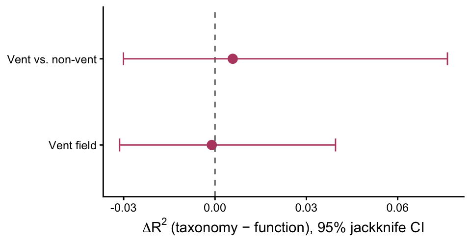
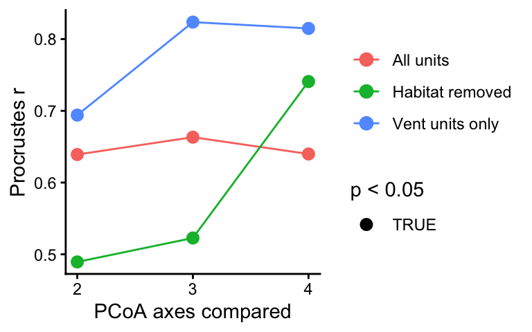
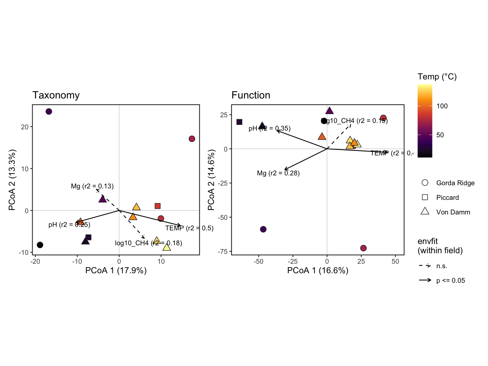
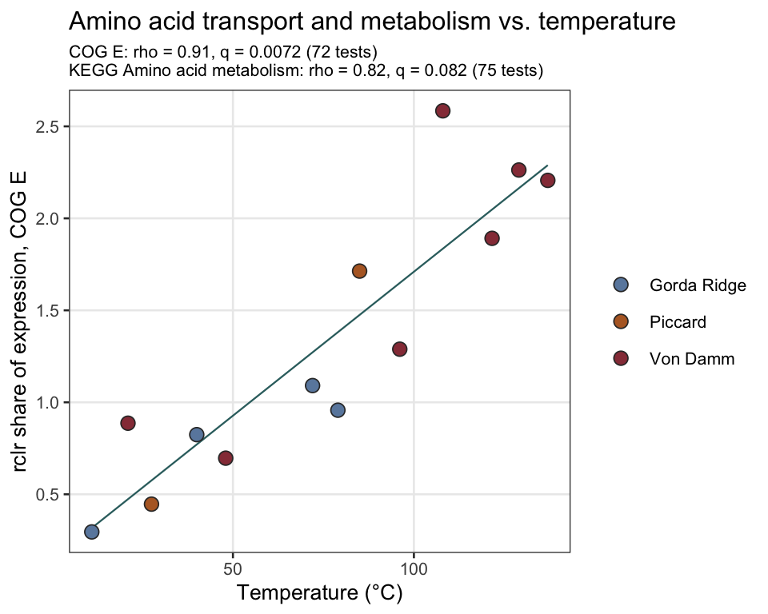

Code
source(if (file.exists("_setup.R")) "_setup.R" else "scripts/_setup.R")
long <- load_long_annot()October 23, 2026
Part 1, habitat and field (all units). Do habitat (vent vs. non-vent) and vent field shape microeukaryotic taxonomy more than expressed function? Do habitat (vent vs. non-vent) and vent field shape microeukaryotic taxonomy more than expressed function?
Environmental effects. PERMANOVA R^2 and PERMDISP for each matrix. Comparison of PERMANOVA R^2 and PERMDISP will help report how each factor structures taxonomy and function.
Taxonomy vs. function (ΔR^2). A jackknife confidence interval on R²(taxonomy) − R²(function). Evaluate this change and determine if the contributions are significant or not.
Coupling. Procrustes correlation between the two ordinations. Are samples that are taxnomically similar to one another also functionally similar?
Part 2, the vent environmental gradient (vent units only). Which vent geochemical variables track taxonomic and functional structure (dbRDA, PCoA + envfit), and which broad functional categories shift along that gradient?
The taxonomic resolution is fixed at rank 4; from 02_taxonomy_grain_ladder.qmd.
# PERMANOVA (marginal R^2, p) + PERMDISP for each contrast on one distance matrix.
## Field-within-vent is tested only when every vent field has >= min_per_field sample units; smaller strata cannot reach p < 0.05 and are skipped.
fit_contrasts <- function(d, meta, matrix_label, min_per_field = 3,
permutations = 9999, seed = 20260730) {
m <- meta[match(labels(d), meta$sample_unit), ]
one_test <- function(dd, mm, rhs, term, label) {
r <- run_permanova(dd, mm, formula_rhs = rhs,
permutations = permutations, seed = seed)
tibble::tibble(
contrast = label,
R2 = r$R2[r$term == term],
p = r$p[r$term == term],
dispersion_p = betadisper_check(dd, mm[[term]], permutations, seed)$dispersion_p,
n_units = nrow(mm)
)
}
out <- list(
one_test(d, m, ~ vent_bin + field, "vent_bin", "Vent vs. non-vent"),
one_test(d, m, ~ vent_bin + field, "field", "Vent field (all units)")
)
vent_ids <- m$sample_unit[m$vent_bin == "Vent"]
vent_meta <- m[match(vent_ids, m$sample_unit), ]
if (n_distinct(vent_meta$field) >= 2 &&
all(table(vent_meta$field) >= min_per_field)) {
vent_d <- stats::as.dist(as.matrix(d)[vent_ids, vent_ids])
out <- c(out, list(one_test(vent_d, vent_meta, ~ field, "field",
"Vent field (vent units)")))
}
bind_rows(out) |>
mutate(matrix = matrix_label, .before = 1)
}
# Delete-one jackknife:
## R²(taxonomy) − R²(function) for each term.
delta_r2_jack <- function(d_tax, d_fxn, meta, terms = c("vent_bin", "field"),
conf = 0.95) {
tax_mat <- as.matrix(d_tax)
ids <- rownames(tax_mat)
fxn_mat <- as.matrix(d_fxn)[ids, ids]
m <- meta[match(ids, meta$sample_unit), ]
n <- length(ids)
marginal_r2 <- function(full_mat, idx) {
fit <- vegan::adonis2(stats::as.dist(full_mat[idx, idx]) ~ vent_bin + field,
data = droplevels(m[idx, ]), by = "margin",
permutations = 9) # R² only; p unused (vegan needs > 1)
fit[terms, "R2"]
}
draw <- function(idx, dropped) {
tibble::tibble(dropped = dropped, term = terms,
r2_tax = marginal_r2(tax_mat, idx),
r2_fxn = marginal_r2(fxn_mat, idx),
delta = r2_tax - r2_fxn)
}
observed <- draw(seq_len(n), NA_character_)
jack <- purrr::map_dfr(seq_len(n), \(i) draw(seq_len(n)[-i], ids[i]))
t_crit <- stats::qt(1 - (1 - conf) / 2, df = n - 1)
summary <- jack |>
left_join(select(observed, term, delta_observed = delta), by = "term") |>
group_by(term) |>
summarise(
delta_observed = dplyr::first(delta_observed),
delta_jack = mean(n * delta_observed - (n - 1) * delta), # bias-corrected ΔR²
jack_se = sqrt((n - 1) / n * sum((delta - mean(delta))^2)),
.groups = "drop") |>
mutate(ci_low = (delta_jack - t_crit * jack_se),
ci_high = (delta_jack + t_crit * jack_se)) |>
left_join(select(observed, term, r2_tax, r2_fxn), by = "term") |>
relocate(term, r2_tax, r2_fxn, delta_observed, delta_jack, jack_se)
list(summary = summary, draws = jack)
}Delete one jacknife Each draw drops one sample unit and refits the marginal PERMANOVA on both matrices. A jackknife never draws a unit twice, so there are no zero-distance duplicate pairs inflating R^2 (the bias in the earlier bootstrap version). rclr is a within-sample transform, so dropping a unit = dropping its row and column of the finished distance matrices; nothing is rebuilt (Efron & Stein 1981). CI = bias-corrected estimate ± t(n − 1) × jackknife SE
Establish parameters that are used below
# Select vent fields
FIELDS_IN_SCOPE <- c("Gorda Ridge", "Von Damm", "Piccard")
# Taxonomic level, 4. See script 02
CHOSEN_DEPTH <- 4
# See how biological units are assigned.
UNIT_COL <- "sample_unit"
ENV_VARS <- c("TEMP", "pH", "CH4", "Mg")
# Model-scale versions (CH4 enters as log10). redundancy determined with temp and CH4, see log10 scale option here.
ENV_MODEL_VARS <- c("TEMP", "pH", "log10_CH4", "Mg")
# Permutation num
N_PERM_MODEL <- 9999Same transcripts feed both matrices. Only the column they are summed by changes (taxon vs. ko_id). Three filters make that true and set the unit of analysis:
prep_paired()): Gorda Ridge, Von Damm and Piccard only; no per-row TPM cutoff; transcripts need a lineage and a KO, so the same transcripts count toward both taxonomy and function; Eukaryota-only and Opisthokonta lineages are dropped.min_prev libraries (prevalence_filter(), the 02 decision). Both filters run on the same table in sequence, so a row that fails either one leaves both matrices.aggregate = "mean" in build_matrix()). Ravelin2, Lotsoshrimp, and Gorda Plume each have two libraries; permuting them as independent samples is pseudoreplication. Every test below runs on sample units.# shared prep (R/prep_paired.R): 3 fields, no row TPM cutoff, multi-KO split
paired <- prep_paired(long, depth = taxon_grain) |>
prevalence_filter("taxon", min_samples = min_prev) |>
prevalence_filter("ko_id", min_samples = min_prev)
# one row per sample unit: the unit of analysis for every test
meta <- paired |>
dplyr::distinct(sample_unit, field, vent_bin, n_reps) |>
dplyr::arrange(sample_unit)
# each unit must sit in exactly one field x habitat cell
stopifnot(dplyr::n_distinct(meta$sample_unit) == nrow(meta))Libraries and sample units per stratum. Report sample units as n. Libraries missing here compared with long were dropped by the TPM, lineage, or prevalence filters.
Robust Aitchison (rclr + Euclidean) matrices from scaled TPM, averaged to sample units.
Build matrices for each, taxonomy and function.
tax <- build_matrix(paired, "taxon", min_tpm = 0, transform = params$transform,
aggregate = "mean", unit_col = "sample_unit")
fxn <- build_matrix(paired, "ko_id", min_tpm = 0, transform = params$transform,
aggregate = "mean", unit_col = "sample_unit")
# same sample units, same order, in both matrices and in meta
stopifnot(identical(labels(tax$dist), labels(fxn$dist)),
setequal(labels(tax$dist), meta$sample_unit))
c(taxonomy_features = ncol(tax$mat), function_features = ncol(fxn$mat),
sample_units = nrow(tax$mat))taxonomy_features function_features sample_units
220 4508 19 R2 is the fraction of that matrix’s variance explained by the term (marginal test).
If dispersion_p < 0.05, groups differ in spread as well as in centroid, so R² cannot be read as a pure composition difference (Anderson & Walsh 2013).
n_units is the number of sample units. If a vent field has fewer than 3 vent units, the within-vent field test is skipped and that row is absent.
env_effects <- dplyr::bind_rows(
# Taxonomy
fit_contrasts(tax$dist, meta, "taxonomy",
permutations = params$permutations, seed = params$seed),
# Function
fit_contrasts(fxn$dist, meta, "function",
permutations = params$permutations, seed = params$seed)) |>
dplyr::arrange(contrast, matrix)
env_effectsTable interpretation (env_effect):
For the vent vs. non-vent comparison, both the taxonomic and functional profiles separate by habitat. Therefore there is a true difference in composition between vent and non-vent samples.
Once habitat is accounted for, vent field has little effect on either matrix.
The vent-units-only field test is not run: Piccard has 2 vent units, below min_per_field = 3, so that row is absent by design. Do not report a within-vent field R².
Habitat (or sample type) structures both taxonomy and function. Vent field has less of an impact.
Here the question gets its significance test. For each term: ΔR² = R²(taxonomy) − R²(function)
A 95% interval that excludes 0 means the term explains a significantly larger (Δ > 0) or smaller (Δ < 0) share of taxonomic than functional variation.
The interval comes from a delete-one jackknife over sample units (Efron & Stein 1981). Each draw drops one unit and refits both PERMANOVAs. delta_jack is the bias-corrected ΔR² and jack_se its standard error; the CI is centered on delta_jack.
Reading notes:
For results: habitat or smaple type (vent vs. non-vent) explains a similar share of taxonomic and functional variation, and vent field structures neither profile.
delta$summary |>
mutate(term = dplyr::recode(term, vent_bin = "Vent vs. non-vent",
field = "Vent field")) |>
ggplot(aes(x = delta_observed, y = term)) +
geom_vline(xintercept = 0, linetype = 2, color = "grey40") +
geom_errorbar(aes(xmin = ci_low, xmax = ci_high), width = 0.15, color = "#b74a70") +
geom_point(size = 3, color = "#b74a70") +
labs(x = expression(Delta*R^2~"(taxonomy − function), 95% jackknife CI"), y = NULL) +
theme_classic(base_size = 11)
Both ordinations are superimposed and the correlation r (0–1) is tested by permutation (Peres-Neto & Jackson 2001). The number of axes is a choice, so we report r at 2–4 axes, along with how much of each matrix’s variation those axes hold. High r means sample units that are taxonomically similar are also functionally similar.
Caveat: both matrices come from the same transcripts, so some shared structure is built in. That makes r an upper bound on biological coupling.
var_captured <- function(d, k) {
eig <- stats::cmdscale(d, k = attr(d, "Size") - 1, eig = TRUE)$eig
eig <- eig[eig > 0]
sum(eig[seq_len(k)]) / sum(eig)
}
coupling <- purrr::map_dfr(2:4, \(k) {
pt <- procrustes_test(tax$dist, fxn$dist, k = k,
permutations = params$permutations, seed = params$seed)
tibble::tibble(k_axes = k,
procrustes_r= pt$t0,
p = pt$signif,
tax_var_captured = var_captured(tax$dist, k),
fxn_var_captured = var_captured(fxn$dist, k))
})
couplingFor results — Procrustes r, p and variance captured at k = 2–4 from
04_procrustes.csv.
Procrustes r is highest on the first two axes and falls as axes are added. Those leading axes likely carry the vent/non-vent split, so high r could mean only that both matrices separate by habitat. Two checks remove habitat from the comparison:
vent_bin out of a dbRDA on the robust Aitchison distance (Legendre & Anderson 1999).Reading notes:
# Procrustes r at k axes for one pair of distance matrices (one row per k)
coupling_at_k <- function(d_tax, d_fxn, test_label, ks = 2:4) {
purrr::map_dfr(ks, \(k) {
pt <- procrustes_test(d_tax, d_fxn, k = k,
permutations = params$permutations, seed = params$seed)
tibble::tibble(test = test_label, k_axes = k,
procrustes_r = pt$t0, p = pt$signif,
n_units = attr(d_tax, "Size"))
})
}# (b) habitat removed: subtract each habitat's mean rclr profile, then Euclidean
habitat_removed_dist <- function(mat) {
z <- rclr_transform(mat)
habitat <- meta$vent_bin[match(rownames(z), meta$sample_unit)]
z_resid <- z - apply(z, 2, \(col) stats::ave(col, habitat))
stats::dist(z_resid)
}
coupling_check <- dplyr::bind_rows(
coupling |>
dplyr::transmute(test = "All units", k_axes, procrustes_r, p,
n_units = attr(tax$dist, "Size")),
coupling_at_k(vent_dist(tax$dist), vent_dist(fxn$dist), "Vent units only"),
coupling_at_k(habitat_removed_dist(tax$mat), habitat_removed_dist(fxn$mat),
"Habitat removed")
)
coupling_checkR procrustes value is higher within vent only units, and then when habitat is taken out of the equation, the higher is with all axes. This shows that samples that are taxonomic similar are also functionally similar. coupled
coupling_check |>
ggplot(aes(x = k_axes, y = procrustes_r, color = test)) +
geom_line() +
geom_point(aes(shape = p < 0.05), size = 3) +
scale_shape_manual(values = c(`TRUE` = 16, `FALSE` = 1), name = "p < 0.05") +
scale_x_continuous(breaks = 2:4) +
labs(x = "PCoA axes compared", y = "Procrustes r", color = NULL) +
theme_classic(base_size = 11)
stopifnot(
nrow(meta) == attr(tax$dist, "Size"), # one metadata row per sample unit
dplyr::n_distinct(meta$sample_unit) == nrow(meta), # no duplicated units
all(c("Vent", "Non-vent") %in% meta$vent_bin), # both habitats present
all(c("taxonomy", "function") %in% env_effects$matrix), # both matrices tested
nrow(delta$draws) == nrow(meta) * 2, # every jackknife draw completed (2 terms)
all(coupling$procrustes_r >= 0 & coupling$procrustes_r <= 1),
# >SKH: shared prep rule held (2026-09-25)
all(unique(paired$field) %in% c("Gorda Ridge", "Von Damm", "Piccard")),
!any(grepl("Opisthokonta", paired$full_classification))
)stopifnot(
setequal(unique(coupling_check$test),
c("All units", "Vent units only", "Habitat removed")), # all three tests ran
all(coupling_check$procrustes_r >= 0 & coupling_check$procrustes_r <= 1),
all(coupling_check$n_units[coupling_check$test == "Vent units only"] ==
length(vent_units)) # vent subset size
)Pre-process data for use. Same input as 02, 04 and 06 (R/prep_paired.R): Gorda Ridge, Von Damm and Piccard; transcripts need a taxa and KO assignment. No per-row TPM cutoff; multi-KO transcripts split with TPM divided equally. Remove Eukaryota-only and Opisthokonta lineages.
[load_paired] data/processed/paired_L4.RData (built 2026-10-23 09:06; 318,911 rows)[1] 21[1] 19[1] 252[1] 7643Use unit tables to establish one row per unit (field, sample tyoe, and number of replicates),
unit_design <- paired_mod |>
distinct(unit = .data[[UNIT_COL]], field, vent_bin, n_reps)
stopifnot(!anyDuplicated(unit_design$unit))
n_units <- nrow(unit_design)
n_vent <- sum(unit_design$vent_bin == "Vent")
n_nonvent <- sum(unit_design$vent_bin == "Non-vent")
unit_design |> count(field, vent_bin) |> print(n = Inf)# A tibble: 6 × 3
field vent_bin n
<chr> <chr> <int>
1 Gorda Ridge Non-vent 2
2 Gorda Ridge Vent 4
3 Piccard Non-vent 2
4 Piccard Vent 2
5 Von Damm Non-vent 2
6 Von Damm Vent 719 units (13 vent, 6 non-vent).Vent units only (13). Non-vent units lack most geochemistry measurements, so they are excluded.
Whole community only. Does environment structure the taxonomic profile, the KO functional profile, or both?
Constrained. Distance-based RDA (dbRDA) on robust Aitchison distance (Legendre & Anderson 1999, Ecol Monogr 69:1–24), with collinear predictors pruned by VIF and the rest forward-selected only when the global model is significant (Blanchet, Legendre & Borcard 2008, Ecology 89:2623–2632).
Unconstrained. PCoA of the same distances with environmental vectors fitted afterwards (envfit), so the axis percentages describe total among-vent variation and cannot overstate how much of the community the environment explains.
Functional investment. Having established that environment structures the community, which broad functional categories shift with it? Using COG functional categories, KEGG categories, and pfam IDs.
Methane measurement was super different between Von Damm and other vent fields. So it is its own vent field indicator. Needed to partition this out (
condition(field)) where appropriate to separate the impact.
From sample_meta (config/sample_metadata.csv), combine environmental parameters and average duplicates. When tehre are two values, these are averaged (Lotsoshrimp, Ravelin2). For missing values, using an impute approach, where a measurement from the same field and sample type will be used in place of an NA. Likely averaged across similar samples.
env_vent <- sample_meta |>
filter(habitat == "Vent", raw_label %in% unit_design$unit) |> # Vents only
group_by(unit = raw_label, field) |>
summarise(across(dplyr::all_of(ENV_VARS), \(x) mean(x, na.rm = TRUE)),
n_meta_rows = n(), .groups = "drop") |>
# mean an all-NA vector is NaN - change to NA
mutate(across(dplyr::all_of(ENV_VARS), \(x) if_else(is.nan(x), NA_real_, x)))
# stopifnot(nrow(env_vent) == n_vent) # DUP CHECK
# Flag first, then fill with the same-field vent mean.
## Add imputed values
env_vent <- env_vent |>
mutate(across(dplyr::all_of(ENV_VARS), is.na, .names = "{.col}_imputed")) |>
group_by(field) |>
mutate(across(dplyr::all_of(ENV_VARS),
\(x) dplyr::coalesce(x, mean(x, na.rm = TRUE)))) |>
ungroup()
env_vent |>
filter(if_any(ends_with("_imputed"))) |>
select(unit, field, ends_with("_imputed")) |>
print()# A tibble: 1 × 6
unit field TEMP_imputed pH_imputed CH4_imputed Mg_imputed
<chr> <chr> <lgl> <lgl> <lgl> <lgl>
1 Gorda Ridge_Vent_SirVent… Gord… FALSE TRUE TRUE FALSE # A tibble: 13 × 7
unit field TEMP pH CH4 Mg n_meta_rows
<chr> <chr> <dbl> <dbl> <dbl> <dbl> <int>
1 Gorda Ridge_Vent_Candelabra Gorda Rid… 79 5.5 23.7 36.5 1
2 Gorda Ridge_Vent_MtEdwards Gorda Rid… 40 6 10.1 43.6 1
3 Gorda Ridge_Vent_SirVentsAlot Gorda Rid… 72 5.97 11.6 52 1
4 Gorda Ridge_Vent_VentiLatte Gorda Rid… 11 6.4 0.9 52.1 1
5 Piccard_Vent_Lotsoshrimp Piccard 27.5 6.12 11.7 52.2 2
6 Piccard_Vent_Shrimpocalypse Piccard 85 5.11 27.5 43.9 1
7 Von Damm_Vent_ArrowLoop Von Damm 137 5.69 1894. 18.1 1
8 Von Damm_Vent_Bartizan Von Damm 129 5.8 1617. 22.7 1
9 Von Damm_Vent_OldManTree Von Damm 122. 5.69 1986. 13.7 1
10 Von Damm_Vent_Ravelin2 Von Damm 96.1 5.81 1894. 18 2
11 Von Damm_Vent_ShrimpHole Von Damm 21 7.72 218. 51.8 1
12 Von Damm_Vent_WhiteCastle Von Damm 108 5.49 2252. 8.9 1
13 Von Damm_Vent_X18 Von Damm 48 6.99 1310. 28 1CH4 spans three orders of magnitude and enters as log10. Everything is z-scored centered/normalized.
Assuming Variane inflation factor (VIF) is 10; this will help us figure out how the variance of an estimated regression increases because of collinearity. When two variables are linearly related, it can cuase issues inflating results, etc.
env_model <- env_vent |>
mutate(log10_CH4 = log10(CH4)) |>
select(unit, field, dplyr::all_of(ENV_MODEL_VARS)) |>
mutate(across(dplyr::all_of(ENV_MODEL_VARS), \(x) as.numeric(scale(x))))
# Pairwise correlation among candidates: expect TEMP and Mg to be tightly (negatively) coupled, because both index the fraction of vent fluid in the sample.
stats::cor(env_model[ENV_MODEL_VARS], method = "spearman") |> round(2) |> print() TEMP pH log10_CH4 Mg
TEMP 1.00 -0.74 0.77 -0.80
pH -0.74 1.00 -0.45 0.53
log10_CH4 0.77 -0.45 1.00 -0.89
Mg -0.80 0.53 -0.89 1.00Retained after VIF < 10: TEMP, pH, MgRetained after VIF < 10: TEMP, pH, Mg.
vif application is code that will remove environmental predictors that are redundant in the downstream dbRDA. Considers the Variance inflation factor. Collinear predictors were removed by iteratively dropping the variable with the highest variance inflation factor until all VIFs were < 10 (Dormann et al. 2013); the retained variables were then forward-selected (Blanchet et al. 2008). Even after scaling we need to drop the CH4
Same builder and prevalence filter as 02/04 (features in >= 4 libraries), restricted to vent libraries, averaged to biological units.
vent_long <- paired_mod |>
filter(vent_bin == "Vent")
q1_levels <- c(taxonomy = "taxon", ko = "ko_id")
q1_mats <- purrr::map(q1_levels, \(feat)
build_matrix(prevalence_filter(vent_long, feat, 4), feat, min_tpm = 0,
aggregate = "mean", unit_col = UNIT_COL))
purrr::iwalk(q1_mats, \(m, lvl) message(glue::glue(
"{lvl}: {nrow(m$mat)} units x {ncol(m$mat)} features")))taxonomy: 13 units x 179 featuresko: 13 units x 2742 featuresDoes environment structure taxonomy, function, or both?
For each level, the full model parameters that passed collinearity test, its global test, forward selection (only if the global test passes), and a per-variable table with and without field partialled out.
Constrained ordination (dbRDA) using robust Aitchison distance. This will model the impact of an explanatory matrix (environemtal factors) on a dependent (or response) matrix (TPM results). Oridinate matrix Y (which is the TPM results, the community response) to see what ordination axes are linear combinations of those from X (environmental matrix).
fit_env_dbrda <- function(d, env, vars, n_perm = N_PERM_MODEL) {
env <- env[match(labels(d), env$unit), ]
stopifnot(identical(env$unit, labels(d)))
# Set up dbRDAs
## Uses temp, pH and Mg, full model
full <- vegan::dbrda(stats::reformulate(vars, response = "d"), data = env)
## establish start point for forward selection model
null <- vegan::dbrda(d ~ 1, data = env)
## permuration test, rows via n_perm. If p < 0.05, forward selection will run.
global <- vegan::anova.cca(full, permutations = n_perm)
#
## If the full model using temp, pH, and Mg is significant, then a global model will be run. Otherwise, fall back.
sel <- if (global$`Pr(>F)`[1] <= 0.05) {
vegan::ordiR2step(null, scope = stats::formula(full), R2scope = TRUE,
permutations = n_perm, trace = FALSE)
} else null
selected <- setdiff(all.vars(stats::formula(sel)), "d")
# Blanchet's second stopping rule rejects any step when adj R2 exceeds the global model.
## Only 1 may be returned, so selection returns nothing even though the global test passed. If significant, it is significant. use that.
best_single <- NA_character_
if (global$`Pr(>F)`[1] <= 0.05 && length(selected) == 0) {
single_r2 <- purrr::map_dbl(vars, \(v) vegan::RsquareAdj(
vegan::dbrda(stats::reformulate(v, response = "d"), data = env))$adj.r.squared)
best_single <- vars[which.max(single_r2)]
best_model <- vegan::dbrda(stats::reformulate(best_single, response = "d"), data = env)
if (vegan::anova.cca(best_model, permutations = n_perm)$`Pr(>F)`[1] <= 0.05) {
sel <- best_model; selected <- best_single
message(glue::glue(" {best_single} alone (adj R2 = {round(max(single_r2), 3)}) ",
"exceeds the global model; kept as the single selected variable."))
}
}
# Each variable alone, then the same variable after removing field.
per_var <- purrr::map_dfr(vars, function(v) {
alone <- vegan::dbrda(stats::reformulate(v, response = "d"), data = env)
cond <- vegan::dbrda(stats::as.formula(paste("d ~", v, "+ Condition(field)")),
data = env)
tibble::tibble(
variable = v,
adjR2_alone = vegan::RsquareAdj(alone)$adj.r.squared,
p_alone= vegan::anova.cca(alone, permutations = n_perm)$`Pr(>F)`[1],
adjR2_given_field = vegan::RsquareAdj(cond)$adj.r.squared,
p_given_field = vegan::anova.cca(cond, permutations = n_perm)$`Pr(>F)`[1])
})
list(full = full, selected_model = sel, selected = selected,
global_F = global$F[1], global_p = global$`Pr(>F)`[1],
full_adjR2 = vegan::RsquareAdj(full)$adj.r.squared,
per_var = per_var)
}Above function will run the global test, forward selection, and find (if necessary) the best single variable with and without vent field considered.
Run dbRDA
set.seed(params$seed)
# Run RDA for all community matrices and short output
## Use map to loop over the matrices, "\(m)" will loop through one element at a time.
q1_fits <- purrr::map(q1_mats, \(m) fit_env_dbrda(m$dist, env_model, env_keep))
# compare taxonomy vs function, same units, same predictors
q1_summary <- purrr::imap_dfr(q1_fits, \(f, lvl) tibble::tibble(
level = lvl,
full_adjR2 = round(f$full_adjR2, 3),
global_F = round(f$global_F, 2),
global_p= f$global_p,
selected = if (length(f$selected)) paste(f$selected, collapse = " + ") else "none"))
q1_summary |> print()# A tibble: 2 × 5
level full_adjR2 global_F global_p selected
<chr> <dbl> <dbl> <dbl> <chr>
1 taxonomy 0.082 1.36 0.0076 TEMP
2 ko 0.042 1.17 0.109 none Table represents community level dbRDA results, across 13 vent ssites. Temperature stands out as the most important parameter. Temperature was the forward selected parameter too, once pH and Mg were added it did not change the outcome.
# A tibble: 6 × 6
level variable adjR2_alone p_alone adjR2_given_field p_given_field
<chr> <chr> <dbl> <dbl> <dbl> <dbl>
1 taxonomy TEMP 0.054 0.0067 0.075 0.004
2 taxonomy pH 0.026 0.112 0.037 0.103
3 taxonomy Mg 0.011 0.217 0.012 0.254
4 ko TEMP 0.035 0.0202 0.068 0.0016
5 ko pH 0.037 0.0792 0.061 0.0172
6 ko Mg 0.013 0.172 0.038 0.0322# Unconstrained PCoA of the full vent-only distance matrix, with environmentalvariables fitted afterwards (envfit). Unlike the dbRDA biplot, the axes show % of TOTAL among-vent variation, so the figure cannot overstate how muchof the community the environment explains.
# All ENV_MODEL_VARS are fitted (collinearity does not matter here: each vector is fitted on its own)
##Two p-values per vector:
### p_free-units permuted freely across all 13 vents
###p_within_field-units permuted only within their field, so a vector that merely separates fields does not look significant.
q1_pcoa <- purrr::imap(q1_mats, function(m, lvl) {
pc<- stats::cmdscale(m$dist, k = 2, eig = TRUE)
eig <- pc$eig[pc$eig > 0]
pct <- round(100 * eig[1:2] / sum(eig), 1)
env <- env_model[match(labels(m$dist), env_model$unit), ]
stopifnot(identical(env$unit, labels(m$dist)))
env_mat <- as.data.frame(env[ENV_MODEL_VARS])
fit_free<- vegan::envfit(pc$points, env_mat, permutations = N_PERM_MODEL)
fit_block <- vegan::envfit(pc$points, env_mat,
permutations = permute::how(blocks = factor(env$field),
nperm = N_PERM_MODEL))
# Get data to work with, vectors, then sites
vectors <- tibble::tibble(
variable= ENV_MODEL_VARS,
dir1 = fit_free$vectors$arrows[, 1],
dir2 = fit_free$vectors$arrows[, 2],
r2 = unname(fit_free$vectors$r),
p_free = unname(fit_free$vectors$pvals),
p_within_field = unname(fit_block$vectors$pvals)) |>
mutate(level = lvl, .before = 1)
#sites
sites <- tibble::tibble(unit = labels(m$dist),
ax1 = pc$points[, 1], ax2 = pc$points[, 2]) |>
left_join(select(env_vent, unit, field, TEMP), by = "unit")
list(sites = sites, vectors = vectors, pct = pct)
})
q1_envfit <- purrr::map_dfr(q1_pcoa, "vectors") |>
mutate(across(c(r2, dir1, dir2), \(x) round(x, 3)))
q1_envfit |> select(-dir1, -dir2) |> print(n = Inf)# A tibble: 8 × 5
level variable r2 p_free p_within_field
<chr> <chr> <dbl> <dbl> <dbl>
1 taxonomy TEMP 0.5 0.0217 0.0079
2 taxonomy pH 0.254 0.228 0.0447
3 taxonomy log10_CH4 0.182 0.380 0.533
4 taxonomy Mg 0.126 0.532 0.481
5 ko TEMP 0.455 0.0423 0.0165
6 ko pH 0.353 0.118 0.0117
7 ko log10_CH4 0.147 0.466 0.502
8 ko Mg 0.278 0.201 0.0397For each variable listed, env fit table shows how it matches withthe first 2 PCoA axes. R^2 value of 0.537 for temperature means that vent protist taxonomic assignment predicts about half of the temperature differences. Also for taxa, pH is only significant within vents only. CH4 and Mg don’t line up with the 2 main PCoA axes.
For the functional profiles, temperature is also strongest, but p-value (free-permuration) undermines this. The functional expression varied similarly to the taxonomic gradient with temperature, but had a broader environmental signature. Once the individual vent differences are taken into account, more is significant.
Together, this shows that temperature, acidity and Mg form a gradient for both taxonomy and function.
Axes with percentage of total among vent variation, color by temperature, solid arrows are significant. Arrow length = sqrt(r2), scaled to the point cloud: a long arrow means the variable is well aligned with the first two axes, not that it is important in the full community.
q1_pcoa_plots <- purrr::imap(q1_pcoa, function(p, lvl) {
reach <- 0.9 * max(abs(c(p$sites$ax1, p$sites$ax2)))
arrows <- p$vectors |>
mutate(xend = dir1 * sqrt(r2) * reach,
yend = dir2 * sqrt(r2) * reach,
sig = p_within_field <= 0.05,
label = glue::glue("{variable} (r2 = {round(r2, 2)})"))
# Plot
ggplot(p$sites, aes(ax1, ax2)) +
geom_hline(yintercept = 0, linewidth = 0.2, colour = "grey75") +
geom_vline(xintercept = 0, linewidth = 0.2, colour = "grey75") +
geom_point(aes(fill = TEMP, shape = field), size = 3,
colour = "grey20") +
geom_segment(data = arrows,
aes(x = 0, y = 0, xend = xend, yend = yend, linetype = sig),
arrow = arrow(length = unit(0.15, "cm"))) +
geom_text(data = arrows,
aes(x = xend * 1.15, y = yend * 1.15, label = label), size = 2.8) +
scale_shape_manual(values = c(21, 22, 24), name = NULL) +
scale_fill_viridis_c(option = "inferno", name = "Temp (°C)") +
scale_linetype_manual(values = c(`TRUE` = "solid", `FALSE` = "dashed"),
labels = c(`TRUE` = "p <= 0.05", `FALSE` = "n.s."),
name = "envfit\n(within field)", drop = FALSE) +
# scale_x_continuous(expand = expansion(mult = 0.3)) +
# scale_y_continuous(expand = expansion(mult = 0.15)) +
coord_equal(clip = "off") +
labs(x = glue::glue("PCoA 1 ({p$pct[1]}%)"),
y = glue::glue("PCoA 2 ({p$pct[2]}%)"),
title = if (lvl == "ko") "Function" else "Taxonomy") +
theme_bw(base_size = 10) +
theme(panel.grid = element_blank())
})
Temperature continues to be the main environmental variable assocaited with protist taxonomic composition and distribution. Across the vent sites samples, temperature explained 5.5% of the variation and this remained with and without vent field considered. pH and Mg (CH4 was found to be redundant) did not add any major explanatory variables.
When the same analysis was run with functional profiles, tmperature explained only 3.5% of the variation of kegg annotated transcripts, pH was 3.7%, and Mg was 1.3% (lower). All these of the environmental parameters considered were significant when vent field was considered.
Performs unconstrained ordinates (x2) for the vent sites. Temperature was the environmental variable most closely aligned with the taxonomic and functional variations across the data.
Gorda SirVentsAlot has no measured pH or CH4; both were filled with the Gorda vent mean. Refit the community dbRDA without that unit (12 vent units). If the per-variable results hold, the imputation is not driving them. Predictors are not re-scaled, because dbRDA fit statistics do not change under linear rescaling of a predictor.
imputed_units <- env_vent |>
filter(dplyr::if_any(ends_with("_imputed"))) |>
pull(unit)
set.seed(params$seed)
q1_per_var_no_imputed <- purrr::imap_dfr(q1_mats, function(m, lvl) {
keep <- setdiff(labels(m$dist), imputed_units)
d <- stats::as.dist(as.matrix(m$dist)[keep, keep])
# Run dbRDA
fit_env_dbrda(d, filter(env_model, unit %in% keep), env_keep)$per_var |>
mutate(level = lvl, n_units = length(keep), .before = 1)
})
q1_imputation_check <- q1_per_var |>
select(level, variable, adjR2_alone, p_alone) |>
left_join(q1_per_var_no_imputed |>
select(level, variable,
n_units,
adjR2_alone_no_imputed = adjR2_alone,
p_alone_no_imputed = p_alone),
by = c("level", "variable")) |>
mutate(across(starts_with("adjR2"), \(x) round(x, 3)))
message(glue::glue("Imputed unit(s) dropped: {paste(imputed_units, collapse = ', ')}"))Imputed unit(s) dropped: Gorda Ridge_Vent_SirVentsAlot# Environmental parameters
readr::write_csv(env_vent, "output-tables/04_q1_env_vent.csv")
readr::write_csv(q1_summary,"output-tables/04_q1_dbrda_summary.csv")
readr::write_csv(q1_per_var,"output-tables/04_q1_dbrda_per_variable.csv")
readr::write_csv(q1_envfit,"output-tables/04_q1_pcoa_envfit.csv")
# Sensitivity check on the imputed vent unit.
readr::write_csv(q1_imputation_check, "output-tables/04_q1_imputation_sensitivity.csv")Which functional categories shift in share of expression along the vent gradient? Each COG category’s rclr share across the 13 vent units is rank-correlated (Spearman, permutation p) with each retained environmental variable, and all category x variable tests are BH-corrected as one family. The same scan on KEGG BRITE level-B categories, an independent annotation of the same transcripts, is the check on any COG hit. One association clears BH: amino acid transport and metabolism (COG E) takes a larger share of expression at higher temperature, and KEGG Amino acid metabolism moves the same way. Temperature, Mg and pH all trace the hydrothermal fluid fraction, so the weaker E correlations with Mg and pH are the same signal, not separate results. With 13 units this is exploratory, and “larger share” means a larger fraction of expression, not more transcripts per cell.
# COG functional categories (Galperin et al. 2021, Nucleic Acids Res 49:D274-D281). Single letters, as eggNOG-mapper emits them.
COG_DESCRIPTIONS <- c(
J = "Translation, ribosomal structure and biogenesis",
A = "RNA processing and modification",
K = "Transcription",
L = "Replication, recombination and repair",
B = "Chromatin structure and dynamics",
D = "Cell cycle control, cell division, chromosome partitioning",
Y = "Nuclear structure",
V = "Defense mechanisms",
T = "Signal transduction mechanisms",
M = "Cell wall/membrane/envelope biogenesis",
N = "Cell motility",
Z = "Cytoskeleton",
W = "Extracellular structures",
U = "Intracellular trafficking, secretion, vesicular transport",
O = "Post-translational modification, protein turnover, chaperones",
X = "Mobilome: prophages, transposons",
C = "Energy production and conversion",
G = "Carbohydrate transport and metabolism",
E = "Amino acid transport and metabolism",
F = "Nucleotide transport and metabolism",
H = "Coenzyme transport and metabolism",
I = "Lipid transport and metabolism",
P = "Inorganic ion transport and metabolism",
Q = "Secondary metabolites biosynthesis, transport, catabolism",
R = "General function prediction only",
S = "Function unknown")
N_PERM_CAT <- 9999 # permutations per correlation
# KO -> KEGG BRITE level B; animal-centric classes (Organismal Systems, Human Diseases) and non-pathways removed
KEGG_BRITE_FILE <- "data/external/ko00001.keg"
KEGG_EXCLUDE_A <- c("09150", "09160", "09180", "09190")
# The reported result and its KEGG counterpart
FOCUS_VAR <- "TEMP"
FOCUS_COG <- "E" # Amino acid transport and metabolism
FOCUS_KEGG <- "09105" # Amino acid metabolism
sig_color <- "#346D6E" # _brand.yml deep-tealSpearman rho per category against one variable. The p-value shuffles the variable across units, so the null keeps each category’s own distribution and only breaks its link to the variable.
spearman_perm <- function(z, x, n_perm = N_PERM_CAT) {
stopifnot(nrow(z) == length(x))
# a category with the same value in every unit has no ranks to correlate
keep <- apply(z, 2, \(col) stats::sd(col) > 0)
if (any(!keep)) {
message(glue::glue(" dropped {sum(!keep)} zero-variance feature(s): ",
"{paste(colnames(z)[!keep], collapse = ', ')}"))
}
z <- z[, keep, drop = FALSE]
if (ncol(z) == 0) stop("No variable features left to correlate.", call. = FALSE)
rz <- scale(apply(z, 2, rank))
rx <- as.numeric(scale(rank(x)))
n <- length(x)
rho <- as.vector(crossprod(rz, rx)) / (n - 1)
perm <- replicate(n_perm, sample(rx)) # units x n_perm
null <- abs(crossprod(rz, perm)) / (n - 1) # features x n_perm
tibble::tibble(feature = colnames(z),
rho = rho,
p_perm = (1 + rowSums(null >= abs(rho))) / (1 + n_perm))
}A transcript with several COG letters (e.g. "BDLTU") splits its scaledTPM equally across them. Categories are summed per biological unit (sum / n_reps) and the units x category matrix is rclr-transformed. All 26 categories are kept, including R and S, because the CLR reference needs the whole composition.
if (!"COG_category" %in% names(paired_mod)) {
stop("`COG_category` is not in the annotation table. This section needs the eggNOG ",
"COG column carried from long_frenemies_annot_tax.", call. = FALSE)
}
# transcript id for the support counts; fall back to counting rows
TX_ID <- c("SEQ_ID", "SequenceID")[c("SEQ_ID", "SequenceID") %in% names(paired_mod)][1]
cog_split <- paired_mod |>
filter(vent_bin == "Vent", !is.na(COG_category), !COG_category %in% c("", "-")) |>
mutate(.txid = if (!is.na(TX_ID)) .data[[TX_ID]] else row_number(),
n_cog = nchar(COG_category)) |>
separate_longer_position(COG_category, width = 1) |>
rename(cog = COG_category) |>
mutate(scaledTPM = scaledTPM / n_cog)
cog_mat <- cog_split |>
group_by(unit = .data[[UNIT_COL]], n_reps, cog) |>
summarise(tpm = sum(scaledTPM) / first(n_reps), .groups = "drop") |>
select(-n_reps) |>
pivot_wider(names_from = cog, values_from = tpm, values_fill = 0) |>
tibble::column_to_rownames("unit") |>
as.matrix()
cog_mat <- cog_mat[env_model$unit, , drop = FALSE] # align rows to the dbRDA predictors
cog_z <- rclr_transform(cog_mat)
cog_support <- cog_split |>
summarise(n_transcripts = n_distinct(.txid), n_kos = n_distinct(ko_id),
total_tpm = sum(scaledTPM), .by = cog) |>
mutate(pct_tpm = round(100 * total_tpm / sum(total_tpm), 2),
description = unname(COG_DESCRIPTIONS[cog])) |>
arrange(desc(total_tpm))
set.seed(params$seed)
cog_gradient <- purrr::map_dfr(env_keep, \(v)
spearman_perm(cog_z, env_model[[v]]) |> mutate(variable = v, .before = 1)) |>
rename(cog = feature) |>
mutate(q_bh = stats::p.adjust(p_perm, method = "BH")) |> # one family: every category x variable
left_join(select(cog_support, cog, description, n_kos, n_transcripts, pct_tpm), by = "cog") |>
mutate(direction = if_else(rho < 0, "decreases", "increases"),
significant = q_bh <= params$fdr_alpha) |>
arrange(q_bh)
message(glue::glue("{nrow(cog_mat)} vent units x {ncol(cog_mat)} COG categories; ",
"{sum(cog_gradient$significant)} of {nrow(cog_gradient)} tests clear BH q <= {params$fdr_alpha}"))13 vent units x 24 COG categories; 1 of 72 tests clear BH q <= 0.05Same build with KEGG BRITE level-B categories. A KO in n level-B categories splits its scaledTPM equally across them; KOs with no retained category drop out, so the composition is over mapped expression only.
if (!file.exists(KEGG_BRITE_FILE)) {
stop("`", KEGG_BRITE_FILE, "` not found. Download the KEGG BRITE KO hierarchy once, e.g.\n",
" curl -o ", KEGG_BRITE_FILE, " \"https://rest.kegg.jp/get/br:ko00001\"\n",
"then re-run.", call. = FALSE)
}
# >SKH: shared parser R/read_brite.R (same map 05, 05b and 06 use; 2026-10-12)
brite_map <- read_brite_level_b(KEGG_BRITE_FILE, exclude_a = KEGG_EXCLUDE_A) |>
select(ko_id, kegg_a, kegg, description, n_cat)
kegg_split <- paired_mod |>
filter(vent_bin == "Vent") |>
transmute(unit = .data[[UNIT_COL]], n_reps, ko_id, scaledTPM,
.txid = if (!is.na(TX_ID)) .data[[TX_ID]] else row_number()) |>
inner_join(brite_map, by = "ko_id", relationship = "many-to-many") |>
mutate(scaledTPM = scaledTPM / n_cat)
# mass conservation: splitting across categories must not create or lose TPM
vent_ko_tpm <- paired_mod |> filter(vent_bin == "Vent")
mapped_tpm <- sum(vent_ko_tpm$scaledTPM[vent_ko_tpm$ko_id %in% brite_map$ko_id])
stopifnot(isTRUE(all.equal(sum(kegg_split$scaledTPM), mapped_tpm)))
kegg_mat <- kegg_split |>
summarise(tpm = sum(scaledTPM) / first(n_reps), .by = c(unit, n_reps, kegg)) |>
select(-n_reps) |>
pivot_wider(names_from = kegg, values_from = tpm, values_fill = 0) |>
tibble::column_to_rownames("unit") |>
as.matrix()
kegg_mat <- kegg_mat[env_model$unit, , drop = FALSE]
kegg_z <- rclr_transform(kegg_mat)
kegg_support <- kegg_split |>
summarise(n_transcripts = n_distinct(.txid), n_kos = n_distinct(ko_id),
total_tpm = sum(scaledTPM), .by = c(kegg, description)) |>
mutate(pct_tpm = round(100 * total_tpm / sum(total_tpm), 2)) |>
arrange(desc(total_tpm))
set.seed(params$seed)
kegg_gradient <- purrr::map_dfr(env_keep, \(v)
spearman_perm(kegg_z, env_model[[v]]) |> mutate(variable = v, .before = 1)) |>
rename(kegg = feature) |>
mutate(q_bh = stats::p.adjust(p_perm, method = "BH")) |>
left_join(select(kegg_support, kegg, description, n_kos, n_transcripts, pct_tpm), by = "kegg") |>
mutate(direction = if_else(rho < 0, "decreases", "increases"),
significant = q_bh <= params$fdr_alpha) |>
arrange(q_bh)
message(glue::glue(
"{round(100 * mapped_tpm / sum(vent_ko_tpm$scaledTPM), 1)}% of vent KO TPM maps to a KEGG level-B category; ",
"{sum(kegg_gradient$significant)} of {nrow(kegg_gradient)} tests clear BH q <= {params$fdr_alpha}"))# flag it if a re-run moves the top COG hit away from the one this section describes
top_cog <- slice_min(cog_gradient, q_bh, n = 1, with_ties = FALSE)
if (top_cog$cog != FOCUS_COG || top_cog$variable != FOCUS_VAR) {
warning("Top COG association is now ", top_cog$cog, " vs ", top_cog$variable,
", not ", FOCUS_COG, " vs ", FOCUS_VAR, ". Update the text above.", call. = FALSE)
}
focus <- bind_rows(
cog = cog_gradient |> filter(cog == FOCUS_COG, variable == FOCUS_VAR) |>
mutate(n_tests = nrow(cog_gradient)) |> rename(category = cog),
kegg = kegg_gradient |> filter(kegg == FOCUS_KEGG, variable == FOCUS_VAR) |>
mutate(n_tests = nrow(kegg_gradient)) |> rename(category = kegg),
.id = "annotation") |>
select(annotation, category, description, variable, rho, p_perm, q_bh, n_tests, pct_tpm)
focusFor results: rho, q and the family size (
n_tests) for COG E; the KEGG line as agreement in direction; andpct_tpm, the share of vent expression the category carries. The full families are in04_cog_category_gradient.csvand04_kegg_category_gradient.csv.
focus_pts <- tibble(unit = rownames(cog_z), rclr = cog_z[, FOCUS_COG]) |>
left_join(transmute(env_vent, unit, field, env_value = .data[[FOCUS_VAR]]), by = "unit")
ggplot(focus_pts, aes(env_value, rclr)) +
geom_smooth(method = "lm", se = FALSE, formula = y ~ x, linewidth = 0.4, colour = sig_color) +
geom_point(aes(fill = field), shape = 21, size = 2.8, colour = "grey20") +
scale_fill_manual(values = color_field, name = NULL) +
labs(x = "Temperature (°C)", y = "rclr share of expression, COG E",
title = "Amino acid transport and metabolism vs. temperature",
subtitle = with(focus, glue::glue(
"COG E: rho = {round(rho[1], 2)}, q = {signif(q_bh[1], 2)} ({n_tests[1]} tests)\n",
"KEGG Amino acid metabolism: rho = {round(rho[2], 2)}, q = {signif(q_bh[2], 2)} ({n_tests[2]} tests)"))) +
theme_bw(base_size = 10) +
theme(panel.grid.minor = element_blank(), plot.subtitle = element_text(size = 8))
For transcripts within the KEGG Amino Acid metabolism categories, the number of transcripts expressed increases with increasing temperature.
readr::write_csv(cog_support, "output-tables/04_cog_category_support.csv")
readr::write_csv(cog_gradient, "output-tables/04_cog_category_gradient.csv")
readr::write_csv(kegg_support, "output-tables/04_kegg_category_support.csv")
readr::write_csv(kegg_gradient, "output-tables/04_kegg_category_gradient.csv")04 asks how environment structures the vent protist community (dbRDA and envfit above), then scans functional category composition against the same gradient (exploratory). The pre-specified growth test (translation, folding, energy categories) was removed on 2026-10-13; see scripts/ARCHIVE/ARCHIVE_05_growth_apriori.qmd.
What 04 deliberately does not answer is which taxa carry the signal. At 13 vent units a single-feature test has almost no power, and the one feature that survived family-wise correction could not support an interpretation. 06 takes the same vent units and asks the taxon-level question with more data behind each claim: how broadly across vent-associated taxa each KO is expressed, and whether the curated heterotrophy KOs sit at the lineage-restricted or the broadly shared end of that distribution.
env_vent: summary of environmental variables we have vs. not. When the value is true, we used an imputed method by taking the field and non-NAs and filling in that value for downstream analyses.
q1_per_var: each retained predictor alone and after partialling out vent field, for both the taxonomic and the functional distance matrix.
stopifnot(
all(unique(paired_mod$field) %in% FIELDS_IN_SCOPE), # fields in scope
!any(grepl("Opisthokonta", paired_mod$full_classification)), # shared prep rule
!anyDuplicated(unit_design$unit), # one row per unit
nrow(env_vent) == n_vent, # env row per vent unit
!anyNA(env_model[ENV_MODEL_VARS]), # no missing predictors
all(purrr::map_lgl(q1_mats, \(m) setequal(labels(m$dist), env_model$unit))),
all(q1_envfit$p_free >= 0 & q1_envfit$p_free <= 1), # envfit p-values in range
identical(rownames(cog_z), env_model$unit), # category matrix aligned to predictors
all(cog_gradient$p_perm > 0 & cog_gradient$p_perm <= 1),
all(cog_gradient$q_bh >= cog_gradient$p_perm - 1e-9), # BH never shrinks a p-value
identical(rownames(kegg_z), env_model$unit), # KEGG matrix aligned to predictors
all(kegg_gradient$p_perm > 0 & kegg_gradient$p_perm <= 1),
all(kegg_gradient$q_bh >= kegg_gradient$p_perm - 1e-9), # BH never shrinks a p-value
all(q1_imputation_check$n_units == n_vent - length(imputed_units)) # sensitivity ran on the reduced set
)Anderson MJ, Walsh DCI (2013) PERMANOVA, ANOSIM, and the Mantel test in the face of heterogeneous dispersions: What null hypothesis are you testing? Ecological Monographs 83:557–574.
Peres-Neto PR, Jackson DA (2001) How well do multivariate data sets match? The advantages of a Procrustean superimposition approach over the Mantel test. Oecologia 129:169–178.
Efron B, Stein C (1981) The jackknife estimate of variance. The Annals of Statistics 9:586–596.
Legendre P, Anderson MJ (1999) Distance-based redundancy analysis: testing multispecies responses in multifactorial ecological experiments. Ecological Monographs 69:1–24.
R version 4.6.0 (2026-04-24)
Platform: aarch64-apple-darwin23
Running under: macOS Sequoia 15.8.1
Matrix products: default
BLAS: /Library/Frameworks/R.framework/Versions/4.6/Resources/lib/libRblas.0.dylib
LAPACK: /Library/Frameworks/R.framework/Versions/4.6/Resources/lib/libRlapack.dylib; LAPACK version 3.12.1
locale:
[1] en_US.UTF-8/en_US.UTF-8/en_US.UTF-8/C/en_US.UTF-8/en_US.UTF-8
time zone: America/Chicago
tzcode source: internal
attached base packages:
[1] stats graphics grDevices utils datasets methods base
other attached packages:
[1] patchwork_1.3.2 glue_1.8.1 vegan_2.7-6 permute_0.9-10
[5] lubridate_1.9.5 forcats_1.0.1 stringr_1.6.0 dplyr_1.2.1
[9] purrr_1.2.2 readr_2.2.0 tidyr_1.3.2 tibble_3.3.1
[13] ggplot2_4.0.3 tidyverse_2.0.0
loaded via a namespace (and not attached):
[1] utf8_1.2.6 generics_0.1.4 stringi_1.8.9 lattice_0.23-1
[5] hms_1.1.4 digest_0.6.39 magrittr_2.0.5 evaluate_1.0.5
[9] grid_4.6.0 timechange_0.4.0 RColorBrewer_1.1-3 fastmap_1.2.0
[13] jsonlite_2.0.0 Matrix_1.7-6 mgcv_1.9-4 viridisLite_0.4.3
[17] scales_1.4.0 cli_3.6.6 crayon_1.5.3 rlang_1.3.0
[21] bit64_4.8.6 splines_4.6.0 withr_3.0.3 yaml_2.3.12
[25] otel_0.2.0 tools_4.6.0 parallel_4.6.0 tzdb_0.5.0
[29] vctrs_0.7.3 R6_2.6.1 lifecycle_1.0.5 bit_4.6.0
[33] htmlwidgets_1.6.4 vroom_1.7.1 MASS_7.3-66 cluster_2.1.8.3
[37] pkgconfig_2.0.3 pillar_1.11.1 gtable_0.3.6 xfun_0.60
[41] tidyselect_1.2.1 rstudioapi_0.19.0 knitr_1.51 farver_2.1.2
[45] htmltools_0.5.9 nlme_3.1-171 labeling_0.4.3 rmarkdown_2.32
[49] compiler_4.6.0 S7_0.2.2 ---
title: "04 — Taxonomy vs. function across habitats and the vent environment"
date: last-modified
format:
html:
toc: true
code-fold: show
df-print: paged
editor: source
---
# Question
**Part 1, habitat and field (all units).** Do habitat (vent vs. non-vent) and vent field shape microeukaryotic **taxonomy** more than **expressed function**?
Do habitat (vent vs. non-vent) and vent field shape microeukaryotic **taxonomy** more than **expressed function**?
**Environmental effects.** PERMANOVA R^2 and PERMDISP for each matrix. Comparison of PERMANOVA R^2 and PERMDISP will help report how each factor structures taxonomy and function.
**Taxonomy vs. function (ΔR^2).** A jackknife confidence interval on R²(taxonomy) − R²(function). Evaluate this change and determine if the contributions are significant or not.
**Coupling.** Procrustes correlation between the two ordinations. Are samples that are taxnomically similar to one another also functionally similar?
**Part 2, the vent environmental gradient (vent units only).** Which vent geochemical variables track taxonomic and functional structure (dbRDA, PCoA + envfit), and which broad functional categories shift along that gradient?
# Set up
```{r setup}
#| message: false
#| warning: false
source(if (file.exists("_setup.R")) "_setup.R" else "scripts/_setup.R")
long <- load_long_annot()
```
The taxonomic resolution is fixed at rank 4; from `02_taxonomy_grain_ladder.qmd`.
```{r settings}
taxon_grain <- 4L
# prevalence floor: taxa and KOs must appear in >= 4 libraries
min_prev <- 4L
```
# Functions for 04
```{r functions}
# PERMANOVA (marginal R^2, p) + PERMDISP for each contrast on one distance matrix.
## Field-within-vent is tested only when every vent field has >= min_per_field sample units; smaller strata cannot reach p < 0.05 and are skipped.
fit_contrasts <- function(d, meta, matrix_label, min_per_field = 3,
permutations = 9999, seed = 20260730) {
m <- meta[match(labels(d), meta$sample_unit), ]
one_test <- function(dd, mm, rhs, term, label) {
r <- run_permanova(dd, mm, formula_rhs = rhs,
permutations = permutations, seed = seed)
tibble::tibble(
contrast = label,
R2 = r$R2[r$term == term],
p = r$p[r$term == term],
dispersion_p = betadisper_check(dd, mm[[term]], permutations, seed)$dispersion_p,
n_units = nrow(mm)
)
}
out <- list(
one_test(d, m, ~ vent_bin + field, "vent_bin", "Vent vs. non-vent"),
one_test(d, m, ~ vent_bin + field, "field", "Vent field (all units)")
)
vent_ids <- m$sample_unit[m$vent_bin == "Vent"]
vent_meta <- m[match(vent_ids, m$sample_unit), ]
if (n_distinct(vent_meta$field) >= 2 &&
all(table(vent_meta$field) >= min_per_field)) {
vent_d <- stats::as.dist(as.matrix(d)[vent_ids, vent_ids])
out <- c(out, list(one_test(vent_d, vent_meta, ~ field, "field",
"Vent field (vent units)")))
}
bind_rows(out) |>
mutate(matrix = matrix_label, .before = 1)
}
# Delete-one jackknife:
## R²(taxonomy) − R²(function) for each term.
delta_r2_jack <- function(d_tax, d_fxn, meta, terms = c("vent_bin", "field"),
conf = 0.95) {
tax_mat <- as.matrix(d_tax)
ids <- rownames(tax_mat)
fxn_mat <- as.matrix(d_fxn)[ids, ids]
m <- meta[match(ids, meta$sample_unit), ]
n <- length(ids)
marginal_r2 <- function(full_mat, idx) {
fit <- vegan::adonis2(stats::as.dist(full_mat[idx, idx]) ~ vent_bin + field,
data = droplevels(m[idx, ]), by = "margin",
permutations = 9) # R² only; p unused (vegan needs > 1)
fit[terms, "R2"]
}
draw <- function(idx, dropped) {
tibble::tibble(dropped = dropped, term = terms,
r2_tax = marginal_r2(tax_mat, idx),
r2_fxn = marginal_r2(fxn_mat, idx),
delta = r2_tax - r2_fxn)
}
observed <- draw(seq_len(n), NA_character_)
jack <- purrr::map_dfr(seq_len(n), \(i) draw(seq_len(n)[-i], ids[i]))
t_crit <- stats::qt(1 - (1 - conf) / 2, df = n - 1)
summary <- jack |>
left_join(select(observed, term, delta_observed = delta), by = "term") |>
group_by(term) |>
summarise(
delta_observed = dplyr::first(delta_observed),
delta_jack = mean(n * delta_observed - (n - 1) * delta), # bias-corrected ΔR²
jack_se = sqrt((n - 1) / n * sum((delta - mean(delta))^2)),
.groups = "drop") |>
mutate(ci_low = (delta_jack - t_crit * jack_se),
ci_high = (delta_jack + t_crit * jack_se)) |>
left_join(select(observed, term, r2_tax, r2_fxn), by = "term") |>
relocate(term, r2_tax, r2_fxn, delta_observed, delta_jack, jack_se)
list(summary = summary, draws = jack)
}
```
*Delete one jacknife*
Each draw drops one sample unit and refits the marginal PERMANOVA on both matrices. A jackknife never draws a unit twice, so there are no zero-distance duplicate pairs inflating R^2 (the bias in the earlier bootstrap version). rclr is a within-sample transform, so dropping a unit = dropping its row and column of the finished distance matrices; nothing is rebuilt (Efron & Stein 1981).
_CI = bias-corrected estimate ± t(n − 1) × jackknife SE_
# Configure Part 2
Establish parameters that are used below
```{r configure}
# Select vent fields
FIELDS_IN_SCOPE <- c("Gorda Ridge", "Von Damm", "Piccard")
# Taxonomic level, 4. See script 02
CHOSEN_DEPTH <- 4
# See how biological units are assigned.
UNIT_COL <- "sample_unit"
ENV_VARS <- c("TEMP", "pH", "CH4", "Mg")
# Model-scale versions (CH4 enters as log10). redundancy determined with temp and CH4, see log10 scale option here.
ENV_MODEL_VARS <- c("TEMP", "pH", "log10_CH4", "Mg")
# Permutation num
N_PERM_MODEL <- 9999
```
# Part 1: habitat and field structure (all units)
## Definitions - set up for using taxonomic level 4
Same transcripts feed both matrices. Only the column they are summed by changes
(`taxon` vs. `ko_id`). Three filters make that true and set the unit of analysis:
1. Shared prep (`prep_paired()`): Gorda Ridge, Von Damm and
Piccard only; no per-row TPM cutoff; transcripts need a lineage and a KO, so the
same transcripts count toward both taxonomy and function; Eukaryota-only and
Opisthokonta lineages are dropped.
2. Taxa and KOs must each appear in at least `min_prev` libraries
(`prevalence_filter()`, the 02 decision). Both filters run on the same table in
sequence, so a row that fails either one leaves both matrices.
3. Replicate libraries are averaged to their sample unit (`aggregate = "mean"` in
`build_matrix()`). Ravelin2, Lotsoshrimp, and Gorda Plume each have two
libraries; permuting them as independent samples is pseudoreplication. Every test
below runs on sample units.
* isolate non-Axial samples
* skip TPM subset
* check for multiKO ID transcripts
* remove opisthokonta
```{r prep}
# shared prep (R/prep_paired.R): 3 fields, no row TPM cutoff, multi-KO split
paired <- prep_paired(long, depth = taxon_grain) |>
prevalence_filter("taxon", min_samples = min_prev) |>
prevalence_filter("ko_id", min_samples = min_prev)
# one row per sample unit: the unit of analysis for every test
meta <- paired |>
dplyr::distinct(sample_unit, field, vent_bin, n_reps) |>
dplyr::arrange(sample_unit)
# each unit must sit in exactly one field x habitat cell
stopifnot(dplyr::n_distinct(meta$sample_unit) == nrow(meta))
```
Libraries and sample units per stratum. Report sample units as *n*. Libraries missing here compared with `long` were dropped by the TPM, lineage, or prevalence filters.
```{r unit-counts}
paired |>
dplyr::distinct(sample_id, vent_bin, field) |>
dplyr::count(vent_bin, field, name = "libraries") |>
dplyr::left_join(dplyr::count(meta, vent_bin, field, name = "sample_units"),
by = c("vent_bin", "field"))
setdiff(unique(long$sample_id), unique(paired$sample_id))
```
## Taxonomy and function matrices
Robust Aitchison (rclr + Euclidean) matrices from scaled TPM, averaged to sample units.
Build matrices for each, taxonomy and function.
```{r matrices}
tax <- build_matrix(paired, "taxon", min_tpm = 0, transform = params$transform,
aggregate = "mean", unit_col = "sample_unit")
fxn <- build_matrix(paired, "ko_id", min_tpm = 0, transform = params$transform,
aggregate = "mean", unit_col = "sample_unit")
# same sample units, same order, in both matrices and in meta
stopifnot(identical(labels(tax$dist), labels(fxn$dist)),
setequal(labels(tax$dist), meta$sample_unit))
c(taxonomy_features = ncol(tax$mat), function_features = ncol(fxn$mat),
sample_units = nrow(tax$mat))
```
### 1. Environmental effects on each matrix
* `R2` is the fraction of that matrix's variance explained by the term (marginal test).
* If `dispersion_p` < 0.05, groups differ in spread as well as in centroid, so R² cannot be read as a pure composition difference (Anderson & Walsh 2013).
* `n_units` is the number of sample units. If a vent field has fewer than 3 vent
units, the within-vent field test is skipped and that row is absent.
```{r env-effects}
env_effects <- dplyr::bind_rows(
# Taxonomy
fit_contrasts(tax$dist, meta, "taxonomy",
permutations = params$permutations, seed = params$seed),
# Function
fit_contrasts(fxn$dist, meta, "function",
permutations = params$permutations, seed = params$seed)) |>
dplyr::arrange(contrast, matrix)
env_effects
```
*Table interpretation (env_effect):*
* For the vent vs. non-vent comparison, both the taxonomic and functional profiles separate by habitat. **Therefore there is a true difference in composition between vent and non-vent samples.**
* Once habitat is accounted for, vent field has little effect on either matrix.
* The vent-units-only field test is not run: Piccard has 2 vent units, below `min_per_field = 3`, so that row is absent by design. Do not report a within-vent field R².
* Habitat (or sample type) structures both taxonomy and function. Vent field has less of an impact.
### 2. Is taxonomy structured more than function across the deep-sea vent environment?
Here the question gets its significance test. For each term:
ΔR² = R²(taxonomy) − R²(function)
A 95% interval that excludes 0 means the term explains a significantly larger (Δ > 0) or smaller (Δ < 0) share of taxonomic than functional variation.
The interval comes from a delete-one jackknife over sample units (Efron & Stein 1981).
Each draw drops one unit and refits both PERMANOVAs. `delta_jack` is the
bias-corrected ΔR² and `jack_se` its standard error; the CI is centered on `delta_jack`.
Reading notes:
- Each R² is a share of *its own* matrix's variance. ΔR² asks which matrix the
environment organizes more strongly, not which matrix has more variance.
- The two matrices differ in dimensions (grain-4 taxa vs. KOs). The interval
captures sampling uncertainty, not that structural difference, so keep the
wording at "explains a larger share of variation."
- If a term has heterogeneous dispersion in either matrix (see step 1), its ΔR²
mixes centroid and spread differences.
```{r delta-r2}
# input Aitchison distance matrices.
delta <- delta_r2_jack(tax$dist, fxn$dist, meta)
delta$summary
```
> For results: habitat or smaple type (vent vs. non-vent) explains a similar share of taxonomic and functional variation, and vent field structures neither profile.
```{r delta-r2-plot}
#| fig-width: 5
#| fig-height: 2.6
delta$summary |>
mutate(term = dplyr::recode(term, vent_bin = "Vent vs. non-vent",
field = "Vent field")) |>
ggplot(aes(x = delta_observed, y = term)) +
geom_vline(xintercept = 0, linetype = 2, color = "grey40") +
geom_errorbar(aes(xmin = ci_low, xmax = ci_high), width = 0.15, color = "#b74a70") +
geom_point(size = 3, color = "#b74a70") +
labs(x = expression(Delta*R^2~"(taxonomy − function), 95% jackknife CI"), y = NULL) +
theme_classic(base_size = 11)
```
### 3. Are taxonomy and function coupled? (Procrustes)
Both ordinations are superimposed and the correlation *r* (0–1) is tested by permutation (Peres-Neto & Jackson 2001). The number of axes is a choice, so we report *r* at 2–4 axes, along with how much of each matrix's variation those axes hold. _High *r* means sample units that are taxonomically similar are also functionally similar._
Caveat: both matrices come from the same transcripts, so some shared structure is built in. That makes *r* an upper bound on biological coupling.
```{r procrustes}
var_captured <- function(d, k) {
eig <- stats::cmdscale(d, k = attr(d, "Size") - 1, eig = TRUE)$eig
eig <- eig[eig > 0]
sum(eig[seq_len(k)]) / sum(eig)
}
coupling <- purrr::map_dfr(2:4, \(k) {
pt <- procrustes_test(tax$dist, fxn$dist, k = k,
permutations = params$permutations, seed = params$seed)
tibble::tibble(k_axes = k,
procrustes_r= pt$t0,
p = pt$signif,
tax_var_captured = var_captured(tax$dist, k),
fxn_var_captured = var_captured(fxn$dist, k))
})
coupling
```
> For results — Procrustes *r*, *p* and variance captured at k = 2–4 from `04_procrustes.csv`.
#### 3b. Is coupling more than a shared response to habitat?
Procrustes *r* is highest on the first two axes and falls as axes are added. Those
leading axes likely carry the vent/non-vent split, so high *r* could mean only that
both matrices separate by habitat. Two checks remove habitat from the comparison:
* **Vent units only.** Within one habitat, habitat cannot drive the match.
* **Habitat removed.** Each unit's rclr profile is centered on its habitat mean
before distances are computed. This is the Euclidean equivalent of partialling
`vent_bin` out of a dbRDA on the robust Aitchison distance (Legendre & Anderson 1999).
Reading notes:
- If *r* stays high and significant in both checks, taxonomy and function are coupled
beyond their shared habitat response.
- If *r* drops toward the permutation null, the coupling in step 3 is the habitat
signal seen twice.
- The vent-only test has fewer units, so its *p* is less powerful; compare *r* values,
not just significance.
```{r procrustes-habitat-check-fxn}
# Procrustes r at k axes for one pair of distance matrices (one row per k)
coupling_at_k <- function(d_tax, d_fxn, test_label, ks = 2:4) {
purrr::map_dfr(ks, \(k) {
pt <- procrustes_test(d_tax, d_fxn, k = k,
permutations = params$permutations, seed = params$seed)
tibble::tibble(test = test_label, k_axes = k,
procrustes_r = pt$t0, p = pt$signif,
n_units = attr(d_tax, "Size"))
})
}
```
```{r procrustes-habitat-check-vents}
# (a) vent units only
vent_units <- meta |>
dplyr::filter(vent_bin == "Vent") |>
dplyr::pull(sample_unit)
vent_dist <- function(d) stats::as.dist(as.matrix(d)[vent_units, vent_units])
```
```{r procrustes-habitat-check-habitat_rm}
# (b) habitat removed: subtract each habitat's mean rclr profile, then Euclidean
habitat_removed_dist <- function(mat) {
z <- rclr_transform(mat)
habitat <- meta$vent_bin[match(rownames(z), meta$sample_unit)]
z_resid <- z - apply(z, 2, \(col) stats::ave(col, habitat))
stats::dist(z_resid)
}
coupling_check <- dplyr::bind_rows(
coupling |>
dplyr::transmute(test = "All units", k_axes, procrustes_r, p,
n_units = attr(tax$dist, "Size")),
coupling_at_k(vent_dist(tax$dist), vent_dist(fxn$dist), "Vent units only"),
coupling_at_k(habitat_removed_dist(tax$mat), habitat_removed_dist(fxn$mat),
"Habitat removed")
)
coupling_check
```
> R procrustes value is higher within vent only units, and then when habitat is taken out of the equation, the higher is with all axes. This shows that samples that are taxonomic similar are also functionally similar. *coupled*
```{r procrustes-habitat-plot}
#| fig-width: 4
#| fig-height: 2.5
coupling_check |>
ggplot(aes(x = k_axes, y = procrustes_r, color = test)) +
geom_line() +
geom_point(aes(shape = p < 0.05), size = 3) +
scale_shape_manual(values = c(`TRUE` = 16, `FALSE` = 1), name = "p < 0.05") +
scale_x_continuous(breaks = 2:4) +
labs(x = "PCoA axes compared", y = "Procrustes r", color = NULL) +
theme_classic(base_size = 11)
```
## Save outputs
```{r write-outputs}
readr::write_csv(env_effects, "output-tables/04_env_effects.csv")
readr::write_csv(delta$summary, "output-tables/04_delta_r2.csv")
readr::write_csv(coupling, "output-tables/04_procrustes.csv")
```
## QC
```{r qc}
stopifnot(
nrow(meta) == attr(tax$dist, "Size"), # one metadata row per sample unit
dplyr::n_distinct(meta$sample_unit) == nrow(meta), # no duplicated units
all(c("Vent", "Non-vent") %in% meta$vent_bin), # both habitats present
all(c("taxonomy", "function") %in% env_effects$matrix), # both matrices tested
nrow(delta$draws) == nrow(meta) * 2, # every jackknife draw completed (2 terms)
all(coupling$procrustes_r >= 0 & coupling$procrustes_r <= 1),
# >SKH: shared prep rule held (2026-09-25)
all(unique(paired$field) %in% c("Gorda Ridge", "Von Damm", "Piccard")),
!any(grepl("Opisthokonta", paired$full_classification))
)
```
```{r write-outputs-habitat-check}
readr::write_csv(coupling_check, "output-tables/04_procrustes_habitat_check.csv")
```
```{r qc-habitat-check}
stopifnot(
setequal(unique(coupling_check$test),
c("All units", "Vent units only", "Habitat removed")), # all three tests ran
all(coupling_check$procrustes_r >= 0 & coupling_check$procrustes_r <= 1),
all(coupling_check$n_units[coupling_check$test == "Vent units only"] ==
length(vent_units)) # vent subset size
)
```
# Part 2: environmental drivers at vents (vent units only)
## Generate tables
### Shared tables - fields in scope, multi-KO split, grain-4 taxon
Pre-process data for use. Same input as 02, 04 and 06 (`R/prep_paired.R`): Gorda Ridge, Von Damm and Piccard; transcripts need a taxa and KO assignment. No per-row TPM cutoff; multi-KO transcripts split with TPM divided equally. Remove Eukaryota-only and Opisthokonta lineages.
```{r shared-prep}
#| message: true
paired_mod <- load_paired(fields = FIELDS_IN_SCOPE, depth = CHOSEN_DEPTH) # built at the end of 02
# CHECK STATS
n_distinct(paired_mod$sample_id) # Number of libraries
n_distinct(paired_mod[[UNIT_COL]]) # Number of biological units
# Using taxon level 4.
n_distinct(paired_mod$taxon) # unique taxa
n_distinct(paired_mod$ko_id) # unique KOs
```
### Collapse to biological units
Use `unit tables` to establish one row per unit (field, sample tyoe, and number of replicates),
```{r unit-tables}
#| message: true
unit_design <- paired_mod |>
distinct(unit = .data[[UNIT_COL]], field, vent_bin, n_reps)
stopifnot(!anyDuplicated(unit_design$unit))
n_units <- nrow(unit_design)
n_vent <- sum(unit_design$vent_bin == "Vent")
n_nonvent <- sum(unit_design$vent_bin == "Non-vent")
unit_design |> count(field, vent_bin) |> print(n = Inf)
message(glue::glue("{n_units} units ({n_vent} vent, {n_nonvent} non-vent)."))
```
## Which taxonomic and functional profiles track with the vent environment?
Vent units only (13). Non-vent units lack most geochemistry measurements, so they are excluded.
**Whole community only.** Does environment structure the taxonomic profile, the KO functional profile, or both?
1. **Constrained.** Distance-based RDA (dbRDA) on robust Aitchison distance (Legendre & Anderson 1999, *Ecol Monogr* 69:1–24), with collinear predictors pruned by VIF and the rest forward-selected only when the global model is significant (Blanchet, Legendre & Borcard 2008, *Ecology* 89:2623–2632).
2. **Unconstrained.** PCoA of the same distances with environmental vectors fitted afterwards (`envfit`), so the axis percentages describe total among-vent variation and cannot overstate how much of the community the environment explains.
3. **Functional investment.** Having established that environment structures the community, which broad functional categories shift with it? Using COG functional categories, KEGG categories, and pfam IDs.
> Methane measurement was super different between Von Damm and other vent fields. So it is its own vent field indicator. Needed to partition this out (`condition(field)`) where appropriate to separate the impact.
### Get one environmental parameter row per vent unit
From `sample_meta` (`config/sample_metadata.csv`), combine environmental parameters and average duplicates. When tehre are two values, these are averaged (Lotsoshrimp, Ravelin2). For missing values, using an impute approach, where a measurement from the same field and sample type will be used in place of an NA. Likely averaged across similar samples.
```{r q1-env-vent}
#| message: true
env_vent <- sample_meta |>
filter(habitat == "Vent", raw_label %in% unit_design$unit) |> # Vents only
group_by(unit = raw_label, field) |>
summarise(across(dplyr::all_of(ENV_VARS), \(x) mean(x, na.rm = TRUE)),
n_meta_rows = n(), .groups = "drop") |>
# mean an all-NA vector is NaN - change to NA
mutate(across(dplyr::all_of(ENV_VARS), \(x) if_else(is.nan(x), NA_real_, x)))
# stopifnot(nrow(env_vent) == n_vent) # DUP CHECK
# Flag first, then fill with the same-field vent mean.
## Add imputed values
env_vent <- env_vent |>
mutate(across(dplyr::all_of(ENV_VARS), is.na, .names = "{.col}_imputed")) |>
group_by(field) |>
mutate(across(dplyr::all_of(ENV_VARS),
\(x) dplyr::coalesce(x, mean(x, na.rm = TRUE)))) |>
ungroup()
env_vent |>
filter(if_any(ends_with("_imputed"))) |>
select(unit, field, ends_with("_imputed")) |>
print()
env_vent |> arrange(field, unit) |>
select(unit, field, all_of(ENV_VARS), n_meta_rows) |>
print(n = Inf)
```
### Transform data, check collinearity, standardize across parameters
CH4 spans three orders of magnitude and enters as log10. Everything is z-scored centered/normalized.
Assuming Variane inflation factor (VIF) is 10; this will help us figure out how the variance of an estimated regression increases because of collinearity. When two variables are linearly related, it can cuase issues inflating results, etc.
```{r q1-predictors}
#| message: true
env_model <- env_vent |>
mutate(log10_CH4 = log10(CH4)) |>
select(unit, field, dplyr::all_of(ENV_MODEL_VARS)) |>
mutate(across(dplyr::all_of(ENV_MODEL_VARS), \(x) as.numeric(scale(x))))
# Pairwise correlation among candidates: expect TEMP and Mg to be tightly (negatively) coupled, because both index the fraction of vent fluid in the sample.
stats::cor(env_model[ENV_MODEL_VARS], method = "spearman") |> round(2) |> print()
env_keep <- vif_select(env_model[ENV_MODEL_VARS], thresh = 10)
message(glue::glue("Retained after VIF < 10: {paste(env_keep, collapse = ', ')}"))
```
> Retained after VIF < 10: TEMP, pH, Mg.
`vif` application is code that will remove environmental predictors that are redundant in the downstream dbRDA. Considers the `Variance inflation factor`. Collinear predictors were removed by iteratively dropping the variable with the highest variance inflation factor until all VIFs were < 10 (Dormann et al. 2013); the retained variables were then forward-selected (Blanchet et al. 2008). *Even after scaling we need to drop the CH4*
### Subset vent-only community matrices
Same builder and prevalence filter as 02/04 (features in >= 4 libraries), restricted to vent libraries, averaged to biological units.
```{r q1-vent-matrices}
#| message: true
vent_long <- paired_mod |>
filter(vent_bin == "Vent")
q1_levels <- c(taxonomy = "taxon", ko = "ko_id")
q1_mats <- purrr::map(q1_levels, \(feat)
build_matrix(prevalence_filter(vent_long, feat, 4), feat, min_tpm = 0,
aggregate = "mean", unit_col = UNIT_COL))
purrr::iwalk(q1_mats, \(m, lvl) message(glue::glue(
"{lvl}: {nrow(m$mat)} units x {ncol(m$mat)} features")))
# stopifnot(purrr::map_lgl(q1_mats, \(m) setequal(labels(m$dist), env_model$unit)))
```
### Run dbRDA
*Does environment structure taxonomy, function, or both?*
For each level, the full model parameters that passed collinearity test, its global test, forward selection (only if the global test passes), and a per-variable table with and without field partialled out.
Constrained ordination (dbRDA) using robust Aitchison distance. This will model the impact of an explanatory matrix (environemtal factors) on a dependent (or response) matrix (TPM results). Oridinate matrix *Y* (which is the TPM results, the community response) to see what ordination axes are linear combinations of those from *X* (environmental matrix).
```{r q1-dbrda-fn}
fit_env_dbrda <- function(d, env, vars, n_perm = N_PERM_MODEL) {
env <- env[match(labels(d), env$unit), ]
stopifnot(identical(env$unit, labels(d)))
# Set up dbRDAs
## Uses temp, pH and Mg, full model
full <- vegan::dbrda(stats::reformulate(vars, response = "d"), data = env)
## establish start point for forward selection model
null <- vegan::dbrda(d ~ 1, data = env)
## permuration test, rows via n_perm. If p < 0.05, forward selection will run.
global <- vegan::anova.cca(full, permutations = n_perm)
#
## If the full model using temp, pH, and Mg is significant, then a global model will be run. Otherwise, fall back.
sel <- if (global$`Pr(>F)`[1] <= 0.05) {
vegan::ordiR2step(null, scope = stats::formula(full), R2scope = TRUE,
permutations = n_perm, trace = FALSE)
} else null
selected <- setdiff(all.vars(stats::formula(sel)), "d")
# Blanchet's second stopping rule rejects any step when adj R2 exceeds the global model.
## Only 1 may be returned, so selection returns nothing even though the global test passed. If significant, it is significant. use that.
best_single <- NA_character_
if (global$`Pr(>F)`[1] <= 0.05 && length(selected) == 0) {
single_r2 <- purrr::map_dbl(vars, \(v) vegan::RsquareAdj(
vegan::dbrda(stats::reformulate(v, response = "d"), data = env))$adj.r.squared)
best_single <- vars[which.max(single_r2)]
best_model <- vegan::dbrda(stats::reformulate(best_single, response = "d"), data = env)
if (vegan::anova.cca(best_model, permutations = n_perm)$`Pr(>F)`[1] <= 0.05) {
sel <- best_model; selected <- best_single
message(glue::glue(" {best_single} alone (adj R2 = {round(max(single_r2), 3)}) ",
"exceeds the global model; kept as the single selected variable."))
}
}
# Each variable alone, then the same variable after removing field.
per_var <- purrr::map_dfr(vars, function(v) {
alone <- vegan::dbrda(stats::reformulate(v, response = "d"), data = env)
cond <- vegan::dbrda(stats::as.formula(paste("d ~", v, "+ Condition(field)")),
data = env)
tibble::tibble(
variable = v,
adjR2_alone = vegan::RsquareAdj(alone)$adj.r.squared,
p_alone= vegan::anova.cca(alone, permutations = n_perm)$`Pr(>F)`[1],
adjR2_given_field = vegan::RsquareAdj(cond)$adj.r.squared,
p_given_field = vegan::anova.cca(cond, permutations = n_perm)$`Pr(>F)`[1])
})
list(full = full, selected_model = sel, selected = selected,
global_F = global$F[1], global_p = global$`Pr(>F)`[1],
full_adjR2 = vegan::RsquareAdj(full)$adj.r.squared,
per_var = per_var)
}
```
Above function will run the global test, forward selection, and find (if necessary) the best single variable with and without vent field considered.
Run dbRDA
```{r q1-dbrda}
#| message: true
set.seed(params$seed)
# Run RDA for all community matrices and short output
## Use map to loop over the matrices, "\(m)" will loop through one element at a time.
q1_fits <- purrr::map(q1_mats, \(m) fit_env_dbrda(m$dist, env_model, env_keep))
# compare taxonomy vs function, same units, same predictors
q1_summary <- purrr::imap_dfr(q1_fits, \(f, lvl) tibble::tibble(
level = lvl,
full_adjR2 = round(f$full_adjR2, 3),
global_F = round(f$global_F, 2),
global_p= f$global_p,
selected = if (length(f$selected)) paste(f$selected, collapse = " + ") else "none"))
q1_summary |> print()
```
> Table represents community level dbRDA results, across 13 vent ssites. Temperature stands out as the most important parameter. Temperature was the forward selected parameter too, once pH and Mg were added it did not change the outcome.
```{r q1-dbrda-per-var}
#| message: true
q1_per_var <- purrr::imap_dfr(q1_fits, \(f, lvl) dplyr::mutate(f$per_var, level = lvl)) |>
relocate(level) |>
mutate(across(starts_with("adjR2"), \(x) round(x, 3)))
q1_per_var |> print(n = Inf)
```
```{r q1-pcoa-envfit}
#| message: true
# Unconstrained PCoA of the full vent-only distance matrix, with environmentalvariables fitted afterwards (envfit). Unlike the dbRDA biplot, the axes show % of TOTAL among-vent variation, so the figure cannot overstate how muchof the community the environment explains.
# All ENV_MODEL_VARS are fitted (collinearity does not matter here: each vector is fitted on its own)
##Two p-values per vector:
### p_free-units permuted freely across all 13 vents
###p_within_field-units permuted only within their field, so a vector that merely separates fields does not look significant.
q1_pcoa <- purrr::imap(q1_mats, function(m, lvl) {
pc<- stats::cmdscale(m$dist, k = 2, eig = TRUE)
eig <- pc$eig[pc$eig > 0]
pct <- round(100 * eig[1:2] / sum(eig), 1)
env <- env_model[match(labels(m$dist), env_model$unit), ]
stopifnot(identical(env$unit, labels(m$dist)))
env_mat <- as.data.frame(env[ENV_MODEL_VARS])
fit_free<- vegan::envfit(pc$points, env_mat, permutations = N_PERM_MODEL)
fit_block <- vegan::envfit(pc$points, env_mat,
permutations = permute::how(blocks = factor(env$field),
nperm = N_PERM_MODEL))
# Get data to work with, vectors, then sites
vectors <- tibble::tibble(
variable= ENV_MODEL_VARS,
dir1 = fit_free$vectors$arrows[, 1],
dir2 = fit_free$vectors$arrows[, 2],
r2 = unname(fit_free$vectors$r),
p_free = unname(fit_free$vectors$pvals),
p_within_field = unname(fit_block$vectors$pvals)) |>
mutate(level = lvl, .before = 1)
#sites
sites <- tibble::tibble(unit = labels(m$dist),
ax1 = pc$points[, 1], ax2 = pc$points[, 2]) |>
left_join(select(env_vent, unit, field, TEMP), by = "unit")
list(sites = sites, vectors = vectors, pct = pct)
})
q1_envfit <- purrr::map_dfr(q1_pcoa, "vectors") |>
mutate(across(c(r2, dir1, dir2), \(x) round(x, 3)))
q1_envfit |> select(-dir1, -dir2) |> print(n = Inf)
```
For each variable listed, `env fit` table shows how it matches withthe first 2 PCoA axes. R^2 value of 0.537 for temperature means that vent protist taxonomic assignment predicts about half of the temperature differences. Also for taxa, pH is only significant within vents only. CH4 and Mg don't line up with the 2 main PCoA axes.
For the functional profiles, temperature is also strongest, but p-value (free-permuration) undermines this. The functional expression varied similarly to the taxonomic gradient with temperature, but had a broader environmental signature. Once the individual vent differences are taken into account, more is significant.
Together, this shows that temperature, acidity and Mg form a gradient for both taxonomy and function.
#### Plot PCoA
Axes with percentage of total among vent variation, color by temperature, solid arrows are significant. Arrow length = sqrt(r2), scaled to the point cloud: a long arrow means the variable is well aligned with the first two axes, not that it is important in the full community.
```{r q1-pcoa-plot}
#| fig-width: 10
#| fig-height: 4.5
q1_pcoa_plots <- purrr::imap(q1_pcoa, function(p, lvl) {
reach <- 0.9 * max(abs(c(p$sites$ax1, p$sites$ax2)))
arrows <- p$vectors |>
mutate(xend = dir1 * sqrt(r2) * reach,
yend = dir2 * sqrt(r2) * reach,
sig = p_within_field <= 0.05,
label = glue::glue("{variable} (r2 = {round(r2, 2)})"))
# Plot
ggplot(p$sites, aes(ax1, ax2)) +
geom_hline(yintercept = 0, linewidth = 0.2, colour = "grey75") +
geom_vline(xintercept = 0, linewidth = 0.2, colour = "grey75") +
geom_point(aes(fill = TEMP, shape = field), size = 3,
colour = "grey20") +
geom_segment(data = arrows,
aes(x = 0, y = 0, xend = xend, yend = yend, linetype = sig),
arrow = arrow(length = unit(0.15, "cm"))) +
geom_text(data = arrows,
aes(x = xend * 1.15, y = yend * 1.15, label = label), size = 2.8) +
scale_shape_manual(values = c(21, 22, 24), name = NULL) +
scale_fill_viridis_c(option = "inferno", name = "Temp (°C)") +
scale_linetype_manual(values = c(`TRUE` = "solid", `FALSE` = "dashed"),
labels = c(`TRUE` = "p <= 0.05", `FALSE` = "n.s."),
name = "envfit\n(within field)", drop = FALSE) +
# scale_x_continuous(expand = expansion(mult = 0.3)) +
# scale_y_continuous(expand = expansion(mult = 0.15)) +
coord_equal(clip = "off") +
labs(x = glue::glue("PCoA 1 ({p$pct[1]}%)"),
y = glue::glue("PCoA 2 ({p$pct[2]}%)"),
title = if (lvl == "ko") "Function" else "Taxonomy") +
theme_bw(base_size = 10) +
theme(panel.grid = element_blank())
})
```
```{r q1-pcoa-plot-save}
#| fig-width: 8
#| fig-height: 6
patchwork::wrap_plots(q1_pcoa_plots, nrow = 1, guides = "collect")
# ggsave("figures/pcoa-plot-supp.svg", width = 8, height = 6, device = "svg", limitsize = FALSE)
```
Temperature continues to be the main environmental variable assocaited with protist taxonomic composition and distribution. Across the vent sites samples, temperature explained 5.5% of the variation and this remained with and without vent field considered. pH and Mg (CH4 was found to be redundant) did not add any major explanatory variables.
When the same analysis was run with functional profiles, tmperature explained only 3.5% of the variation of kegg annotated transcripts, pH was 3.7%, and Mg was 1.3% (lower). All these of the environmental parameters considered were significant when vent field was considered.
Performs unconstrained ordinates (x2) for the vent sites. Temperature was the environmental variable most closely aligned with the taxonomic and functional variations across the data.
### Sensitivity: drop the imputed vent unit
Gorda SirVentsAlot has no measured pH or CH4; both were filled with the Gorda vent mean. Refit the community dbRDA without that unit (12 vent units). If the per-variable results hold, the imputation is not driving them. Predictors are not re-scaled, because dbRDA fit statistics do not change under linear rescaling of a predictor.
```{r q1-imputation-sensitivity}
#| message: true
imputed_units <- env_vent |>
filter(dplyr::if_any(ends_with("_imputed"))) |>
pull(unit)
set.seed(params$seed)
q1_per_var_no_imputed <- purrr::imap_dfr(q1_mats, function(m, lvl) {
keep <- setdiff(labels(m$dist), imputed_units)
d <- stats::as.dist(as.matrix(m$dist)[keep, keep])
# Run dbRDA
fit_env_dbrda(d, filter(env_model, unit %in% keep), env_keep)$per_var |>
mutate(level = lvl, n_units = length(keep), .before = 1)
})
q1_imputation_check <- q1_per_var |>
select(level, variable, adjR2_alone, p_alone) |>
left_join(q1_per_var_no_imputed |>
select(level, variable,
n_units,
adjR2_alone_no_imputed = adjR2_alone,
p_alone_no_imputed = p_alone),
by = c("level", "variable")) |>
mutate(across(starts_with("adjR2"), \(x) round(x, 3)))
message(glue::glue("Imputed unit(s) dropped: {paste(imputed_units, collapse = ', ')}"))
q1_imputation_check
```
```{r q1-write}
# Environmental parameters
readr::write_csv(env_vent, "output-tables/04_q1_env_vent.csv")
readr::write_csv(q1_summary,"output-tables/04_q1_dbrda_summary.csv")
readr::write_csv(q1_per_var,"output-tables/04_q1_dbrda_per_variable.csv")
readr::write_csv(q1_envfit,"output-tables/04_q1_pcoa_envfit.csv")
# Sensitivity check on the imputed vent unit.
readr::write_csv(q1_imputation_check, "output-tables/04_q1_imputation_sensitivity.csv")
```
## Functional category composition along the vent gradient
*Which functional categories shift in share of expression along the vent gradient?* Each COG category's rclr share across the 13 vent units is rank-correlated (Spearman, permutation p) with each retained environmental variable, and all category x variable tests are BH-corrected as one family. The same scan on KEGG BRITE level-B categories, an independent annotation of the same transcripts, is the check on any COG hit. One association clears BH: **amino acid transport and metabolism (COG E) takes a larger share of expression at higher temperature**, and KEGG Amino acid metabolism moves the same way. Temperature, Mg and pH all trace the hydrothermal fluid fraction, so the weaker E correlations with Mg and pH are the same signal, not separate results. With 13 units this is exploratory, and "larger share" means a larger fraction of expression, not more transcripts per cell.
```{r category-config}
# COG functional categories (Galperin et al. 2021, Nucleic Acids Res 49:D274-D281). Single letters, as eggNOG-mapper emits them.
COG_DESCRIPTIONS <- c(
J = "Translation, ribosomal structure and biogenesis",
A = "RNA processing and modification",
K = "Transcription",
L = "Replication, recombination and repair",
B = "Chromatin structure and dynamics",
D = "Cell cycle control, cell division, chromosome partitioning",
Y = "Nuclear structure",
V = "Defense mechanisms",
T = "Signal transduction mechanisms",
M = "Cell wall/membrane/envelope biogenesis",
N = "Cell motility",
Z = "Cytoskeleton",
W = "Extracellular structures",
U = "Intracellular trafficking, secretion, vesicular transport",
O = "Post-translational modification, protein turnover, chaperones",
X = "Mobilome: prophages, transposons",
C = "Energy production and conversion",
G = "Carbohydrate transport and metabolism",
E = "Amino acid transport and metabolism",
F = "Nucleotide transport and metabolism",
H = "Coenzyme transport and metabolism",
I = "Lipid transport and metabolism",
P = "Inorganic ion transport and metabolism",
Q = "Secondary metabolites biosynthesis, transport, catabolism",
R = "General function prediction only",
S = "Function unknown")
N_PERM_CAT <- 9999 # permutations per correlation
# KO -> KEGG BRITE level B; animal-centric classes (Organismal Systems, Human Diseases) and non-pathways removed
KEGG_BRITE_FILE <- "data/external/ko00001.keg"
KEGG_EXCLUDE_A <- c("09150", "09160", "09180", "09190")
# The reported result and its KEGG counterpart
FOCUS_VAR <- "TEMP"
FOCUS_COG <- "E" # Amino acid transport and metabolism
FOCUS_KEGG <- "09105" # Amino acid metabolism
sig_color <- "#346D6E" # _brand.yml deep-teal
```
Spearman rho per category against one variable. The p-value shuffles the variable across units, so the null keeps each category's own distribution and only breaks its link to the variable.
```{r category-spearman-fn}
spearman_perm <- function(z, x, n_perm = N_PERM_CAT) {
stopifnot(nrow(z) == length(x))
# a category with the same value in every unit has no ranks to correlate
keep <- apply(z, 2, \(col) stats::sd(col) > 0)
if (any(!keep)) {
message(glue::glue(" dropped {sum(!keep)} zero-variance feature(s): ",
"{paste(colnames(z)[!keep], collapse = ', ')}"))
}
z <- z[, keep, drop = FALSE]
if (ncol(z) == 0) stop("No variable features left to correlate.", call. = FALSE)
rz <- scale(apply(z, 2, rank))
rx <- as.numeric(scale(rank(x)))
n <- length(x)
rho <- as.vector(crossprod(rz, rx)) / (n - 1)
perm <- replicate(n_perm, sample(rx)) # units x n_perm
null <- abs(crossprod(rz, perm)) / (n - 1) # features x n_perm
tibble::tibble(feature = colnames(z),
rho = rho,
p_perm = (1 + rowSums(null >= abs(rho))) / (1 + n_perm))
}
```
### COG scan
A transcript with several COG letters (e.g. `"BDLTU"`) splits its scaledTPM equally across them. Categories are summed per biological unit (`sum / n_reps`) and the units x category matrix is rclr-transformed. All 26 categories are kept, including `R` and `S`, because the CLR reference needs the whole composition.
```{r category-cog}
#| message: true
if (!"COG_category" %in% names(paired_mod)) {
stop("`COG_category` is not in the annotation table. This section needs the eggNOG ",
"COG column carried from long_frenemies_annot_tax.", call. = FALSE)
}
# transcript id for the support counts; fall back to counting rows
TX_ID <- c("SEQ_ID", "SequenceID")[c("SEQ_ID", "SequenceID") %in% names(paired_mod)][1]
cog_split <- paired_mod |>
filter(vent_bin == "Vent", !is.na(COG_category), !COG_category %in% c("", "-")) |>
mutate(.txid = if (!is.na(TX_ID)) .data[[TX_ID]] else row_number(),
n_cog = nchar(COG_category)) |>
separate_longer_position(COG_category, width = 1) |>
rename(cog = COG_category) |>
mutate(scaledTPM = scaledTPM / n_cog)
cog_mat <- cog_split |>
group_by(unit = .data[[UNIT_COL]], n_reps, cog) |>
summarise(tpm = sum(scaledTPM) / first(n_reps), .groups = "drop") |>
select(-n_reps) |>
pivot_wider(names_from = cog, values_from = tpm, values_fill = 0) |>
tibble::column_to_rownames("unit") |>
as.matrix()
cog_mat <- cog_mat[env_model$unit, , drop = FALSE] # align rows to the dbRDA predictors
cog_z <- rclr_transform(cog_mat)
cog_support <- cog_split |>
summarise(n_transcripts = n_distinct(.txid), n_kos = n_distinct(ko_id),
total_tpm = sum(scaledTPM), .by = cog) |>
mutate(pct_tpm = round(100 * total_tpm / sum(total_tpm), 2),
description = unname(COG_DESCRIPTIONS[cog])) |>
arrange(desc(total_tpm))
set.seed(params$seed)
cog_gradient <- purrr::map_dfr(env_keep, \(v)
spearman_perm(cog_z, env_model[[v]]) |> mutate(variable = v, .before = 1)) |>
rename(cog = feature) |>
mutate(q_bh = stats::p.adjust(p_perm, method = "BH")) |> # one family: every category x variable
left_join(select(cog_support, cog, description, n_kos, n_transcripts, pct_tpm), by = "cog") |>
mutate(direction = if_else(rho < 0, "decreases", "increases"),
significant = q_bh <= params$fdr_alpha) |>
arrange(q_bh)
message(glue::glue("{nrow(cog_mat)} vent units x {ncol(cog_mat)} COG categories; ",
"{sum(cog_gradient$significant)} of {nrow(cog_gradient)} tests clear BH q <= {params$fdr_alpha}"))
```
### KEGG check
Same build with KEGG BRITE level-B categories. A KO in *n* level-B categories splits its scaledTPM equally across them; KOs with no retained category drop out, so the composition is over mapped expression only.
```{r category-kegg}
#| message: true
#| warning: false
if (!file.exists(KEGG_BRITE_FILE)) {
stop("`", KEGG_BRITE_FILE, "` not found. Download the KEGG BRITE KO hierarchy once, e.g.\n",
" curl -o ", KEGG_BRITE_FILE, " \"https://rest.kegg.jp/get/br:ko00001\"\n",
"then re-run.", call. = FALSE)
}
# >SKH: shared parser R/read_brite.R (same map 05, 05b and 06 use; 2026-10-12)
brite_map <- read_brite_level_b(KEGG_BRITE_FILE, exclude_a = KEGG_EXCLUDE_A) |>
select(ko_id, kegg_a, kegg, description, n_cat)
kegg_split <- paired_mod |>
filter(vent_bin == "Vent") |>
transmute(unit = .data[[UNIT_COL]], n_reps, ko_id, scaledTPM,
.txid = if (!is.na(TX_ID)) .data[[TX_ID]] else row_number()) |>
inner_join(brite_map, by = "ko_id", relationship = "many-to-many") |>
mutate(scaledTPM = scaledTPM / n_cat)
# mass conservation: splitting across categories must not create or lose TPM
vent_ko_tpm <- paired_mod |> filter(vent_bin == "Vent")
mapped_tpm <- sum(vent_ko_tpm$scaledTPM[vent_ko_tpm$ko_id %in% brite_map$ko_id])
stopifnot(isTRUE(all.equal(sum(kegg_split$scaledTPM), mapped_tpm)))
kegg_mat <- kegg_split |>
summarise(tpm = sum(scaledTPM) / first(n_reps), .by = c(unit, n_reps, kegg)) |>
select(-n_reps) |>
pivot_wider(names_from = kegg, values_from = tpm, values_fill = 0) |>
tibble::column_to_rownames("unit") |>
as.matrix()
kegg_mat <- kegg_mat[env_model$unit, , drop = FALSE]
kegg_z <- rclr_transform(kegg_mat)
kegg_support <- kegg_split |>
summarise(n_transcripts = n_distinct(.txid), n_kos = n_distinct(ko_id),
total_tpm = sum(scaledTPM), .by = c(kegg, description)) |>
mutate(pct_tpm = round(100 * total_tpm / sum(total_tpm), 2)) |>
arrange(desc(total_tpm))
set.seed(params$seed)
kegg_gradient <- purrr::map_dfr(env_keep, \(v)
spearman_perm(kegg_z, env_model[[v]]) |> mutate(variable = v, .before = 1)) |>
rename(kegg = feature) |>
mutate(q_bh = stats::p.adjust(p_perm, method = "BH")) |>
left_join(select(kegg_support, kegg, description, n_kos, n_transcripts, pct_tpm), by = "kegg") |>
mutate(direction = if_else(rho < 0, "decreases", "increases"),
significant = q_bh <= params$fdr_alpha) |>
arrange(q_bh)
message(glue::glue(
"{round(100 * mapped_tpm / sum(vent_ko_tpm$scaledTPM), 1)}% of vent KO TPM maps to a KEGG level-B category; ",
"{sum(kegg_gradient$significant)} of {nrow(kegg_gradient)} tests clear BH q <= {params$fdr_alpha}"))
```
### Result
```{r category-result}
# flag it if a re-run moves the top COG hit away from the one this section describes
top_cog <- slice_min(cog_gradient, q_bh, n = 1, with_ties = FALSE)
if (top_cog$cog != FOCUS_COG || top_cog$variable != FOCUS_VAR) {
warning("Top COG association is now ", top_cog$cog, " vs ", top_cog$variable,
", not ", FOCUS_COG, " vs ", FOCUS_VAR, ". Update the text above.", call. = FALSE)
}
focus <- bind_rows(
cog = cog_gradient |> filter(cog == FOCUS_COG, variable == FOCUS_VAR) |>
mutate(n_tests = nrow(cog_gradient)) |> rename(category = cog),
kegg = kegg_gradient |> filter(kegg == FOCUS_KEGG, variable == FOCUS_VAR) |>
mutate(n_tests = nrow(kegg_gradient)) |> rename(category = kegg),
.id = "annotation") |>
select(annotation, category, description, variable, rho, p_perm, q_bh, n_tests, pct_tpm)
focus
```
> For results: rho, q and the family size (`n_tests`) for COG E; the KEGG line as agreement in direction; and `pct_tpm`, the share of vent expression the category carries. The full families are in `04_cog_category_gradient.csv` and `04_kegg_category_gradient.csv`.
```{r category-figure}
#| fig-width: 5
#| fig-height: 4
#| fig-cap: "Share of expression assigned to COG E (amino acid transport and metabolism) in each of the 13 vent units against fluid temperature, colored by vent field. Statistics are from the exploratory scan: Spearman rho with permutation p, BH-corrected across all COG category x variable tests; the KEGG line is the same test on KEGG Amino acid metabolism, corrected across the KEGG family. The line is a least-squares guide only."
focus_pts <- tibble(unit = rownames(cog_z), rclr = cog_z[, FOCUS_COG]) |>
left_join(transmute(env_vent, unit, field, env_value = .data[[FOCUS_VAR]]), by = "unit")
ggplot(focus_pts, aes(env_value, rclr)) +
geom_smooth(method = "lm", se = FALSE, formula = y ~ x, linewidth = 0.4, colour = sig_color) +
geom_point(aes(fill = field), shape = 21, size = 2.8, colour = "grey20") +
scale_fill_manual(values = color_field, name = NULL) +
labs(x = "Temperature (°C)", y = "rclr share of expression, COG E",
title = "Amino acid transport and metabolism vs. temperature",
subtitle = with(focus, glue::glue(
"COG E: rho = {round(rho[1], 2)}, q = {signif(q_bh[1], 2)} ({n_tests[1]} tests)\n",
"KEGG Amino acid metabolism: rho = {round(rho[2], 2)}, q = {signif(q_bh[2], 2)} ({n_tests[2]} tests)"))) +
theme_bw(base_size = 10) +
theme(panel.grid.minor = element_blank(), plot.subtitle = element_text(size = 8))
```
For transcripts within the KEGG Amino Acid metabolism categories, the number of transcripts expressed increases with increasing temperature.
```{r category-write}
readr::write_csv(cog_support, "output-tables/04_cog_category_support.csv")
readr::write_csv(cog_gradient, "output-tables/04_cog_category_gradient.csv")
readr::write_csv(kegg_support, "output-tables/04_kegg_category_support.csv")
readr::write_csv(kegg_gradient, "output-tables/04_kegg_category_gradient.csv")
```
## Where this goes next
04 asks how environment structures the vent protist community (dbRDA and envfit above), then scans functional category composition against the same gradient (exploratory). The pre-specified growth test (translation, folding, energy categories) was removed on 2026-10-13; see `scripts/ARCHIVE/ARCHIVE_05_growth_apriori.qmd`.
What 04 deliberately does not answer is *which* taxa carry the signal. At 13 vent units a single-feature test has almost no power, and the one feature that survived family-wise correction could not support an interpretation. 06 takes the same vent units and asks the taxon-level question with more data behind each claim: how broadly across vent-associated taxa each KO is expressed, and whether the curated heterotrophy KOs sit at the lineage-restricted or the broadly shared end of that distribution.
## Summary of all tables
`env_vent`: summary of environmental variables we have vs. not. When the value is true, we used an imputed method by taking the field and non-NAs and filling in that value for downstream analyses.
```{r}
head(env_vent)
```
`q1_per_var`: each retained predictor alone and after partialling out vent field, for both the taxonomic and the functional distance matrix.
```{r}
q1_per_var
```
## QC
```{r qc-env}
stopifnot(
all(unique(paired_mod$field) %in% FIELDS_IN_SCOPE), # fields in scope
!any(grepl("Opisthokonta", paired_mod$full_classification)), # shared prep rule
!anyDuplicated(unit_design$unit), # one row per unit
nrow(env_vent) == n_vent, # env row per vent unit
!anyNA(env_model[ENV_MODEL_VARS]), # no missing predictors
all(purrr::map_lgl(q1_mats, \(m) setequal(labels(m$dist), env_model$unit))),
all(q1_envfit$p_free >= 0 & q1_envfit$p_free <= 1), # envfit p-values in range
identical(rownames(cog_z), env_model$unit), # category matrix aligned to predictors
all(cog_gradient$p_perm > 0 & cog_gradient$p_perm <= 1),
all(cog_gradient$q_bh >= cog_gradient$p_perm - 1e-9), # BH never shrinks a p-value
identical(rownames(kegg_z), env_model$unit), # KEGG matrix aligned to predictors
all(kegg_gradient$p_perm > 0 & kegg_gradient$p_perm <= 1),
all(kegg_gradient$q_bh >= kegg_gradient$p_perm - 1e-9), # BH never shrinks a p-value
all(q1_imputation_check$n_units == n_vent - length(imputed_units)) # sensitivity ran on the reduced set
)
```
# References
Anderson MJ, Walsh DCI (2013) PERMANOVA, ANOSIM, and the Mantel test in the face of
heterogeneous dispersions: What null hypothesis are you testing? *Ecological
Monographs* 83:557–574.
Peres-Neto PR, Jackson DA (2001) How well do multivariate data sets match? The
advantages of a Procrustean superimposition approach over the Mantel test. *Oecologia*
129:169–178.
Efron B, Stein C (1981) The jackknife estimate of variance. *The Annals of
Statistics* 9:586–596.
Legendre P, Anderson MJ (1999) Distance-based redundancy analysis: testing
multispecies responses in multifactorial ecological experiments. *Ecological
Monographs* 69:1–24.
# Session Info
```{r session-info}
sessionInfo()
```